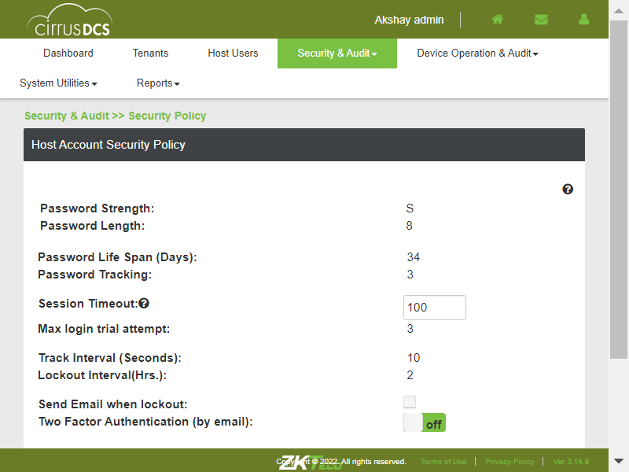
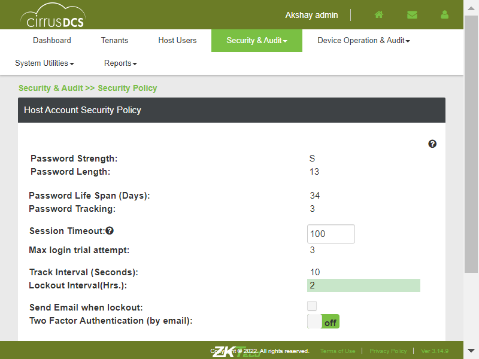
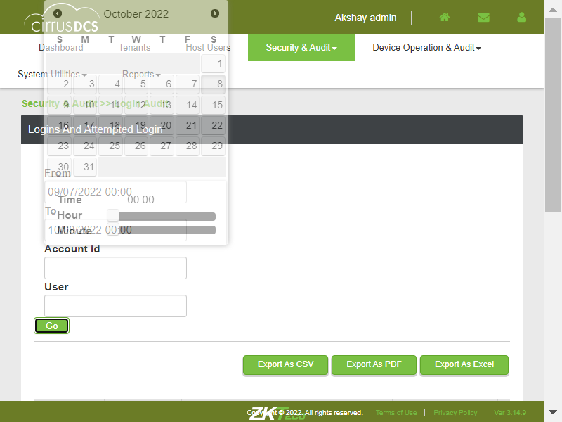

-
CirrusDCSSecurityandAuditModule
0h 17m 46s+59ms
12:43:57 pmCirrusDCSSecurityandAuditModule
04.06.2023 12:43:57 04.06.2023 13:01:43 0h 17m 46s+59ms@CirrusDCSI want to use this template for my feature fileVerify whether User is able to navigate to DcsHostLogin and verify the security and audit modulecom.zkteco.cirrusdcs.stepDefinitions.CirrusDCS.i_initialize_drivers_for_DCS_automation()Driver InitializedGiven I visit CirrusDCS HostLogin pageThen I visit CirrusDCS HostLogin with valid credentialsThen I visit CirrusDCS HostLogin and verify Security and audit module is displayed with its submenuVerify whether User is able to click on the host role page and verify the all the fields are availablecom.zkteco.cirrusdcs.stepDefinitions.CirrusDCS.i_initialize_drivers_for_DCS_automation()Driver InitializedGiven I visit CirrusDCS HostLogin pageThen I visit CirrusDCS HostLogin with valid credentialsThen I click on the security and audit moduleThen I click on the host role submoduleThen I verify that all the fields are available on the pageTo verify whether User is able to view the pages accessible for host_User/host_supre/host_admin Roles.com.zkteco.cirrusdcs.stepDefinitions.CirrusDCS.i_initialize_drivers_for_DCS_automation()Driver InitializedGiven I visit CirrusDCS HostLogin pageThen I visit CirrusDCS HostLogin with valid credentialsThen I click on the security and audit moduleThen I click on the host role submoduleThen I click on the Add New available pagesThen I verify that user is able to view the pages accessible for host_User/host_supre/host_admin RolesTo veriify whether User is able to Delete the page that is accessible for selected Role User.com.zkteco.cirrusdcs.stepDefinitions.CirrusDCS.i_initialize_drivers_for_DCS_automation()Driver InitializedGiven I visit CirrusDCS HostLogin pageThen I visit CirrusDCS HostLogin with valid credentialsThen I click on the security and audit moduleThen I click on the host role submoduleThen I click on the Add New available pagesThen I add all available pages to the roleThen I verify that User is able to Delete the page that is accessible for selected Role UserTo verify whether deleted page is not relflecting in the Page when logged incom.zkteco.cirrusdcs.stepDefinitions.CirrusDCS.i_initialize_drivers_for_DCS_automation()Driver InitializedGiven I visit CirrusDCS HostLogin pageThen I visit CirrusDCS HostLogin with valid credentialsThen I click on the security and audit moduleThen I click on the host role submoduleThen I click on the Add New available pagesThen I add all available pages to the roleThen I verify that User is able to Delete the page that is accessible for selected Role UserThen I verify that deleted page is not reflecting in the List Of Accessible Pages for selected role userTo verify whether User is able to add the deleted page to the Role selectedcom.zkteco.cirrusdcs.stepDefinitions.CirrusDCS.i_initialize_drivers_for_DCS_automation()Driver InitializedGiven I visit CirrusDCS HostLogin pageThen I visit CirrusDCS HostLogin with valid credentialsThen I click on the security and audit moduleThen I click on the host role submoduleThen I click on the Add New available pagesThen I add all available pages to the roleThen I verify that User is able to Delete the page that is accessible for selected Role UserThen I verify that deleted page is not reflecting in the List Of Accessible Pages for selected role userThen I view the available pageThen I verify that user is able to add the deleted page to the selected roleTo verify whether deleted page is not relflecting in the Page when logged incom.zkteco.cirrusdcs.stepDefinitions.CirrusDCS.i_initialize_drivers_for_DCS_automation()Driver InitializedGiven I visit CirrusDCS HostLogin pageThen I visit CirrusDCS HostLogin with valid credentialsThen I click on the security and audit moduleThen I click on the host role submoduleThen I click on the Add New available pagesThen I add all available pages to the roleThen I verify that User is able to Delete the page that is accessible for selected Role UserThen I logout the DCS host accountThen I visit CirrusDCS HostLogin with valid credentialsThen I click on the security and audit moduleThen I click on the host role submoduleThen I verify that deleted page is not reflecting in the List Of Accessible Pages for selected role userTo verify whether User is able to view the list of Users of Rolecom.zkteco.cirrusdcs.stepDefinitions.CirrusDCS.i_initialize_drivers_for_DCS_automation()Driver InitializedGiven I visit CirrusDCS HostLogin pageThen I visit CirrusDCS HostLogin with valid credentialsThen I click on the security and audit moduleThen I click on the host role submoduleThen I click on the List of users btnThen I verify that User is able to view the list of UsersTo verify whether User is able to "Delete the User" from the selected Rolecom.zkteco.cirrusdcs.stepDefinitions.CirrusDCS.i_initialize_drivers_for_DCS_automation()Driver InitializedGiven I visit CirrusDCS HostLogin pageThen I visit CirrusDCS HostLogin with valid credentialsWhen I click on Host UsersThen I click on New User buttonThen I Enter all the detailsThen I click on Save buttonThen I click on the security and audit moduleThen I click on the host role submoduleThen I click on the List of users btnThen I click on the Add hosts users btnThen I add host user from available listThen I click on the List of users btnThen I click on the Action btn which is under ListOf User btnThen I verify that user is able to delete the user from the delete the User pageTo verify whether Deleted User can be added to User name listcom.zkteco.cirrusdcs.stepDefinitions.CirrusDCS.i_initialize_drivers_for_DCS_automation()Driver InitializedGiven I visit CirrusDCS HostLogin pageThen I visit CirrusDCS HostLogin with valid credentialsWhen I click on Host UsersThen I click on New User buttonThen I Enter all the detailsThen I click on Save buttonThen I click on the security and audit moduleThen I click on the host role submoduleThen I click on the List of users btnThen I click on the Add hosts users btnThen I add host user from available listThen I click on the List of users btnThen I click on the Action btn which is under ListOf User btnThen I verify that user is able to delete the user from the delete the User pageThen I click on the Add hosts users btnThen I view the available usersThen I click on the Save btn which is avliable on the available usersThen I verify that user is able to add the deleted page to the selected roleTo verify whether User is able to navigate to Tenant Role page.com.zkteco.cirrusdcs.stepDefinitions.CirrusDCS.i_initialize_drivers_for_DCS_automation()Driver InitializedGiven I visit CirrusDCS HostLogin pageThen I visit CirrusDCS HostLogin with valid credentialsThen I click on the security and audit moduleThen I click on the tenant role submoduleThen I verify that user is able to view the all the available fieldsTo verify whether User is able to create new Tenant role.com.zkteco.cirrusdcs.stepDefinitions.CirrusDCS.i_initialize_drivers_for_DCS_automation()Driver InitializedGiven I visit CirrusDCS HostLogin pageThen I visit CirrusDCS HostLogin with valid credentialsThen I click on the security and audit moduleThen I click on the tenant role submoduleThen I click on the Add new Tenant Role buttonThen I fill the all the fields in the Add new Tenant Role windowThen I Verify that user is able to create new tenant roleTo verify whether User is able to view list of pages accessible for the tenant rolecom.zkteco.cirrusdcs.stepDefinitions.CirrusDCS.i_initialize_drivers_for_DCS_automation()Driver InitializedGiven I visit CirrusDCS HostLogin pageThen I visit CirrusDCS HostLogin with valid credentialsThen I click on the security and audit moduleThen I click on the tenant role submoduleThen I click on the particular tenant which is available in the tenant user roles blockThen I click on the edit button on the particular tenant roleThen I verify that user is able to view the list of pages accessible for the particular tenant roleTo verify whether User is able to Add the pages to the Tenant role Accessible pages list.com.zkteco.cirrusdcs.stepDefinitions.CirrusDCS.i_initialize_drivers_for_DCS_automation()Driver InitializedGiven I visit CirrusDCS HostLogin pageThen I visit CirrusDCS HostLogin with valid credentialsThen I click on the security and audit moduleThen I click on the tenant role submoduleThen I click on the particular tenant which is available in the tenant user roles blockThen I click on the edit button on the particular tenant roleThen I add the new page under the particular tenant roleThen I verify that user is able to view the list of pages accessible for the particular tenant roleTo verify whether User is able to change permissions given to the accessible pages of the tenant role.com.zkteco.cirrusdcs.stepDefinitions.CirrusDCS.i_initialize_drivers_for_DCS_automation()Driver InitializedGiven I visit CirrusDCS HostLogin pageThen I visit CirrusDCS HostLogin with valid credentialsThen I click on the security and audit moduleThen I click on the tenant role submoduleThen I click on the particular tenant which is available in the tenant user roles blockTo verify whether User is able to Delete the accessible page for the Tenant Role.com.zkteco.cirrusdcs.stepDefinitions.CirrusDCS.i_initialize_drivers_for_DCS_automation()Driver InitializedGiven I visit CirrusDCS HostLogin pageThen I visit CirrusDCS HostLogin with valid credentialsThen I click on the security and audit moduleThen I click on the tenant role submoduleThen I click on the particular tenant which is available in the tenant user roles blockThen I select the particular tenant's tenant role and click on the edit buttonThen I click on the Add new available page under the Accessible pages blockThen I view the respected Accessible page under the respected tenant roleTo verify whether User is able to navigate to Security policy page.com.zkteco.cirrusdcs.stepDefinitions.CirrusDCS.i_initialize_drivers_for_DCS_automation()Driver InitializedGiven I visit CirrusDCS HostLogin pageThen I visit CirrusDCS HostLogin with valid credentialsThen I click on the security and audit moduleThen I click on the security policy submoduleThen I verify that user is able to view the all the available fields in the security policy submoduleTo verify whether User is able to change the password streangth.com.zkteco.cirrusdcs.stepDefinitions.CirrusDCS.i_initialize_drivers_for_DCS_automation()Driver InitializedGiven I visit CirrusDCS HostLogin pageThen I visit CirrusDCS HostLogin with valid credentialsThen I click on the security and audit moduleThen I click on the security policy submoduleThen I click on the password strength fieldsThen I verify user is able to view the all the option under in the password strength fieldTo verify whether User is able to set password life span.com.zkteco.cirrusdcs.stepDefinitions.CirrusDCS.i_initialize_drivers_for_DCS_automation()Driver InitializedGiven I visit CirrusDCS HostLogin pageThen I visit CirrusDCS HostLogin with valid credentialsThen I click on the security and audit moduleThen I click on the security policy submoduleThen I click on the password life span daysThen I verify user is able to set the set password life span value as per the requirementTo verify whether User is able to set the session Timeoutcom.zkteco.cirrusdcs.stepDefinitions.CirrusDCS.i_initialize_drivers_for_DCS_automation()Driver InitializedGiven I visit CirrusDCS HostLogin pageThen I visit CirrusDCS HostLogin with valid credentialsThen I click on the security and audit moduleThen I click on the security policy submoduleThen I click on the session time outThen I verify user is able to set the session time out value as per the requirementcom.zkteco.cirrusdcs.stepDefinitions.CirrusDCS.teardown(io.cucumber.java.Scenario)To verify whether User is able to Set the Track interval timecom.zkteco.cirrusdcs.stepDefinitions.CirrusDCS.i_initialize_drivers_for_DCS_automation()Driver InitializedGiven I visit CirrusDCS HostLogin pageThen I visit CirrusDCS HostLogin with valid credentialsThen I click on the security and audit moduleThen I click on the security policy submoduleThen I click on the track intervalThen I verify user is able to set the track interval value as per the requirementTo verify whether User is able to set the password length.com.zkteco.cirrusdcs.stepDefinitions.CirrusDCS.i_initialize_drivers_for_DCS_automation()Driver InitializedGiven I visit CirrusDCS HostLogin pageThen I visit CirrusDCS HostLogin with valid credentialsThen I click on the security and audit moduleThen I click on the security policy submoduleThen I click on the password lengthThen I verify user is able to set the password length value as per the requirementTo verify whether set password length policy is reflecting in Host page.com.zkteco.cirrusdcs.stepDefinitions.CirrusDCS.i_initialize_drivers_for_DCS_automation()Driver InitializedGiven I visit CirrusDCS HostLogin pageThen I visit CirrusDCS HostLogin with valid credentialsThen I click on the security and audit moduleThen I click on the security policy submoduleThen I click on the password lengthThen I verify user is able to set the password length value as per the requirementThen I logout the DCS host accountThen I visit CirrusDCS HostLogin with valid credentialsThen I click on the Host Users moduleThen I search the particular host user in the host users pageThen I verify that user is able to view the set password length policy is reflecting in Host pageTo verify whether User is able to set Password Tracking.com.zkteco.cirrusdcs.stepDefinitions.CirrusDCS.i_initialize_drivers_for_DCS_automation()Driver InitializedGiven I visit CirrusDCS HostLogin pageThen I visit CirrusDCS HostLogin with valid credentialsThen I click on the security and audit moduleThen I click on the security policy submoduleThen I click on the password trackingThen I verify user is able to set the password traking value as per the requirementTo verify whether User is able to set the Max login trial attemptcom.zkteco.cirrusdcs.stepDefinitions.CirrusDCS.i_initialize_drivers_for_DCS_automation()Driver InitializedGiven I visit CirrusDCS HostLogin pageThen I visit CirrusDCS HostLogin with valid credentialsThen I click on the security and audit moduleThen I click on the security policy submoduleThen I click on the Max login trial attemptTo verify whether the account is locked after set number of Max incorrect login trial attemptcom.zkteco.cirrusdcs.stepDefinitions.CirrusDCS.i_initialize_drivers_for_DCS_automation()Driver InitializedGiven I visit CirrusDCS HostLogin pageThen I visit CirrusDCS HostLogin with valid credentialsThen I click on the security and audit moduleThen I click on the security policy submoduleThen I click on the Max login trial attemptThen I verify user is able to set the Max login trial attempt value as per the requirementThen I logout the DCS host accountThen I visit CirrusDCS HostLogin with invalid credentialsThen I verify that user is able to check that account is locked after set number of Max incorrect login trial attemptTo verify whether User is able to set the Lockout Intervalcom.zkteco.cirrusdcs.stepDefinitions.CirrusDCS.i_initialize_drivers_for_DCS_automation()Driver InitializedGiven I visit CirrusDCS HostLogin pageThen I visit CirrusDCS HostLogin with valid credentialsThen I click on the security and audit moduleThen I click on the security policy submoduleThen I click on the Lockout intervalThen I verify user is able to set the Lockout interval value as per the requirementcom.zkteco.cirrusdcs.stepDefinitions.CirrusDCS.teardown(io.cucumber.java.Scenario)To verify whether User is able to Set Two Factor Authentication (by email).com.zkteco.cirrusdcs.stepDefinitions.CirrusDCS.i_initialize_drivers_for_DCS_automation()Driver InitializedGiven I visit CirrusDCS HostLogin pageThen I visit CirrusDCS HostLogin with valid credentialsThen I click on the security and audit moduleThen I click on the security policy submoduleThen I click on the Two Factor Authentication by emailThen I verify user is able to set the Two Factor Authentication by email as per the requirementTo verify whether User is able to Set Two Factor Authentication (by email).com.zkteco.cirrusdcs.stepDefinitions.CirrusDCS.i_initialize_drivers_for_DCS_automation()Driver InitializedGiven I visit CirrusDCS HostLogin pageThen I visit CirrusDCS HostLogin with valid credentialsThen I click on the security and audit moduleThen I click on the security policy submoduleThen I click on the Send Email when lockout check boxThen I verify user is able to set the Send Email when lockout check box toggle button as per the requirementTo verify whether User is able to navigate to Active Login Users page.com.zkteco.cirrusdcs.stepDefinitions.CirrusDCS.i_initialize_drivers_for_DCS_automation()Driver InitializedGiven I visit CirrusDCS HostLogin pageThen I visit CirrusDCS HostLogin with valid credentialsThen I click on the security and audit moduleThen I click on the Active login users submoduleThen I verify user is able to view the all the fieds under the Active login users pageTo verify whether User is able to view login Users and their details in Login User Table.com.zkteco.cirrusdcs.stepDefinitions.CirrusDCS.i_initialize_drivers_for_DCS_automation()Driver InitializedGiven I visit CirrusDCS HostLogin pageThen I visit CirrusDCS HostLogin with valid credentialsThen I click on the security and audit moduleThen I click on the Active login users submoduleThen I verify user is able to view the login Users and their details in Login User TableTo verify whether User is able to search User with User Account ID.com.zkteco.cirrusdcs.stepDefinitions.CirrusDCS.i_initialize_drivers_for_DCS_automation()Driver InitializedGiven I visit CirrusDCS HostLogin pageThen I visit CirrusDCS HostLogin with valid credentialsThen I click on the security and audit moduleThen I click on the Active login users submoduleThen I verify that user is able to search the account id by the account id search fieldTo verify whether User is able to search User with User namecom.zkteco.cirrusdcs.stepDefinitions.CirrusDCS.i_initialize_drivers_for_DCS_automation()Driver InitializedGiven I visit CirrusDCS HostLogin pageThen I visit CirrusDCS HostLogin with valid credentialsThen I click on the security and audit moduleThen I click on the Active login users submoduleThen I verify that user is able to search the User by the User name search fieldTo verify whether User is able to logoff login Usercom.zkteco.cirrusdcs.stepDefinitions.CirrusDCS.i_initialize_drivers_for_DCS_automation()Driver InitializedGiven I visit CirrusDCS HostLogin pageThen I visit CirrusDCS HostLogin with valid credentialsThen I click on the security and audit moduleThen I click on the Active login users submoduleThen I verify that User is able to logoff login UserTo verify whether User is able to Export Active Login Users details as CSV filecom.zkteco.cirrusdcs.stepDefinitions.CirrusDCS.i_initialize_drivers_for_DCS_automation()Driver InitializedGiven I visit CirrusDCS HostLogin pageThen I visit CirrusDCS HostLogin with valid credentialsThen I click on the security and audit moduleThen I click on the Active login users submoduleThen I verify that User is able to Download Active Logi Users details as CSV File formatTo verify whether User is able to Export Active Login Users details as PDF filecom.zkteco.cirrusdcs.stepDefinitions.CirrusDCS.i_initialize_drivers_for_DCS_automation()Driver InitializedGiven I visit CirrusDCS HostLogin pageThen I visit CirrusDCS HostLogin with valid credentialsThen I click on the security and audit moduleThen I click on the Active login users submoduleThen I verify that User is able to Download Active Logi Users details as PDF File formatTo verify whether User is able to Export Active Login Users details as excel filecom.zkteco.cirrusdcs.stepDefinitions.CirrusDCS.i_initialize_drivers_for_DCS_automation()Driver InitializedGiven I visit CirrusDCS HostLogin pageThen I visit CirrusDCS HostLogin with valid credentialsThen I click on the security and audit moduleThen I click on the Active login users submoduleThen I verify that User is able to Download Active Logi Users details as Excel File formatTo verify whether User is able to view recently logged in Userscom.zkteco.cirrusdcs.stepDefinitions.CirrusDCS.i_initialize_drivers_for_DCS_automation()Driver InitializedGiven I visit CirrusDCS HostLogin pageThen I visit CirrusDCS HostLogin with valid credentialsThen I click on the security and audit moduleThen I click on the Active login users submoduleThen I verify that User is able to view recently logged in UsersTo verify whether User is able to navigate to Host User Audit page.com.zkteco.cirrusdcs.stepDefinitions.CirrusDCS.i_initialize_drivers_for_DCS_automation()Driver InitializedGiven I visit CirrusDCS HostLogin pageThen I visit CirrusDCS HostLogin with valid credentialsThen I click on the security and audit moduleThen I click on the Host user Audit submoduleThen I verify that User is able to view the all the field which is available on the Host User Audit pageTo verify whether User is able to search User details by Datecom.zkteco.cirrusdcs.stepDefinitions.CirrusDCS.i_initialize_drivers_for_DCS_automation()Driver InitializedGiven I visit CirrusDCS HostLogin pageThen I visit CirrusDCS HostLogin with valid credentialsThen I click on the security and audit moduleThen I click on the Host user Audit submoduleThen I verify that User is able to search User details by DateTo verify whether User is able to Search the User by entering Usernamecom.zkteco.cirrusdcs.stepDefinitions.CirrusDCS.i_initialize_drivers_for_DCS_automation()Driver InitializedGiven I visit CirrusDCS HostLogin pageThen I visit CirrusDCS HostLogin with valid credentialsThen I click on the security and audit moduleThen I click on the Host user Audit submoduleThen I verify that User is able to search User details by entering UsernameTo verify whether User is able to Export Host User Audit details as CSV file.com.zkteco.cirrusdcs.stepDefinitions.CirrusDCS.i_initialize_drivers_for_DCS_automation()Driver InitializedGiven I visit CirrusDCS HostLogin pageThen I visit CirrusDCS HostLogin with valid credentialsThen I click on the security and audit moduleThen I click on the Host user Audit submoduleThen I verify that User is able to Export Host User Audit details as CSV fileTo verify whether User is able to Export Host User Audit details as PDF file.com.zkteco.cirrusdcs.stepDefinitions.CirrusDCS.i_initialize_drivers_for_DCS_automation()Driver InitializedGiven I visit CirrusDCS HostLogin pageThen I visit CirrusDCS HostLogin with valid credentialsThen I click on the security and audit moduleThen I click on the Host user Audit submoduleThen I verify that User is able to Export Host User Audit details as PDF fileTo verify whether User is able to Export Host User Audit details as Excel file.com.zkteco.cirrusdcs.stepDefinitions.CirrusDCS.i_initialize_drivers_for_DCS_automation()Driver InitializedGiven I visit CirrusDCS HostLogin pageThen I visit CirrusDCS HostLogin with valid credentialsThen I click on the security and audit moduleThen I click on the Host user Audit submoduleThen I verify that User is able to Export Host User Audit details as Excel fileTo verify whether User is able to navigate to Login audit pagecom.zkteco.cirrusdcs.stepDefinitions.CirrusDCS.i_initialize_drivers_for_DCS_automation()Driver InitializedGiven I visit CirrusDCS HostLogin pageThen I visit CirrusDCS HostLogin with valid credentialsThen I click on the security and audit moduleThen I click on the Login Audit submoduleThen I verify that User is able to view the all the fields which are available on the Login Audit pageTo verify whether User is able to view login Users by Datecom.zkteco.cirrusdcs.stepDefinitions.CirrusDCS.i_initialize_drivers_for_DCS_automation()Driver InitializedGiven I visit CirrusDCS HostLogin pageThen I visit CirrusDCS HostLogin with valid credentialsThen I click on the security and audit moduleThen I click on the Login Audit submoduleThen I verify that User is able to search login Users details by Datecom.zkteco.cirrusdcs.stepDefinitions.CirrusDCS.teardown(io.cucumber.java.Scenario)To verify whether User is able to Filter User by Account IDcom.zkteco.cirrusdcs.stepDefinitions.CirrusDCS.i_initialize_drivers_for_DCS_automation()Driver InitializedGiven I visit CirrusDCS HostLogin pageThen I visit CirrusDCS HostLogin with valid credentialsThen I click on the security and audit moduleThen I click on the Login Audit submoduleThen I verify that User is able to search login Users details by Account IDTo verify whether User is able to Filter User by User namecom.zkteco.cirrusdcs.stepDefinitions.CirrusDCS.i_initialize_drivers_for_DCS_automation()Driver InitializedGiven I visit CirrusDCS HostLogin pageThen I visit CirrusDCS HostLogin with valid credentialsThen I click on the security and audit moduleThen I click on the Login Audit submoduleThen I verify that User is able to search login Users details by User nameTo verify whether User is able to view Failed login attempted detailscom.zkteco.cirrusdcs.stepDefinitions.CirrusDCS.i_initialize_drivers_for_DCS_automation()Driver InitializedGiven I visit CirrusDCS HostLogin pageThen I visit CirrusDCS HostLogin with valid credentialsThen I click on the security and audit moduleThen I click on the Login Audit submoduleThen I verify that User is able to view the failed login attempted detailsTo verify whether User is able To Export Login Audit details as CSV file.com.zkteco.cirrusdcs.stepDefinitions.CirrusDCS.i_initialize_drivers_for_DCS_automation()Driver InitializedGiven I visit CirrusDCS HostLogin pageThen I visit CirrusDCS HostLogin with valid credentialsThen I click on the security and audit moduleThen I click on the Login Audit submoduleThen I verify that User is able to Export Login Audit details as CSV fileTo verify whether User is able To Export Login Audit details as PDF file.com.zkteco.cirrusdcs.stepDefinitions.CirrusDCS.i_initialize_drivers_for_DCS_automation()Driver InitializedGiven I visit CirrusDCS HostLogin pageThen I visit CirrusDCS HostLogin with valid credentialsThen I click on the security and audit moduleThen I click on the Login Audit submoduleThen I verify that User is able to Export Login Audit details as PDF fileTo verify whether User is able To Export Login Audit details as EXCEL file.com.zkteco.cirrusdcs.stepDefinitions.CirrusDCS.i_initialize_drivers_for_DCS_automation()Driver InitializedGiven I visit CirrusDCS HostLogin pageThen I visit CirrusDCS HostLogin with valid credentialsThen I click on the security and audit moduleThen I click on the Login Audit submoduleThen I verify that User is able to Export Login Audit details as EXCEL fileTo verify whether User is able to navigate to Expired Accounts pagecom.zkteco.cirrusdcs.stepDefinitions.CirrusDCS.i_initialize_drivers_for_DCS_automation()Driver InitializedGiven I visit CirrusDCS HostLogin pageThen I visit CirrusDCS HostLogin with valid credentialsThen I click on the security and audit moduleThen I click on the Expired Accounts submoduleThen I verify that User is able to view the all the fields which are available on the Expired Accounts pageTo verify whether User is able to view details of Account expired.com.zkteco.cirrusdcs.stepDefinitions.CirrusDCS.i_initialize_drivers_for_DCS_automation()Driver InitializedGiven I visit CirrusDCS HostLogin pageThen I visit CirrusDCS HostLogin with valid credentialsThen I click on the security and audit moduleThen I click on the Expired Accounts submoduleThen I verify that User is able to view details of Account expiredTo verify whether User is able to Export Expired Accounts details as CSV file.com.zkteco.cirrusdcs.stepDefinitions.CirrusDCS.i_initialize_drivers_for_DCS_automation()Driver InitializedGiven I visit CirrusDCS HostLogin pageThen I visit CirrusDCS HostLogin with valid credentialsThen I click on the security and audit moduleThen I click on the Expired Accounts submoduleThen I verify that User is able to Export Expired Accounts details as CSV fileTo verify whether User is able to Export Expired Accounts details as PDF file.com.zkteco.cirrusdcs.stepDefinitions.CirrusDCS.i_initialize_drivers_for_DCS_automation()Driver InitializedGiven I visit CirrusDCS HostLogin pageThen I visit CirrusDCS HostLogin with valid credentialsThen I click on the security and audit moduleThen I click on the Expired Accounts submoduleThen I verify that User is able to Export Expired Accounts details as PDF fileTo verify whether User is able to Export Expired Accounts details as EXCEL file.com.zkteco.cirrusdcs.stepDefinitions.CirrusDCS.i_initialize_drivers_for_DCS_automation()Driver InitializedGiven I visit CirrusDCS HostLogin pageThen I visit CirrusDCS HostLogin with valid credentialsThen I click on the security and audit moduleThen I click on the Expired Accounts submoduleThen I verify that User is able to Export Expired Accounts details as EXCEL fileTo verify whether user is able to Navigate to Events page.com.zkteco.cirrusdcs.stepDefinitions.CirrusDCS.i_initialize_drivers_for_DCS_automation()Driver InitializedGiven I visit CirrusDCS HostLogin pageThen I visit CirrusDCS HostLogin with valid credentialsThen I click on the security and audit moduleThen I click on the Events submoduleThen I verify that User is able to view the all the fields which are available on the Events pageTo verify whether user is able to observe Event ocuured in Events Tablecom.zkteco.cirrusdcs.stepDefinitions.CirrusDCS.i_initialize_drivers_for_DCS_automation()Driver InitializedGiven I visit CirrusDCS HostLogin pageThen I visit CirrusDCS HostLogin with valid credentialsThen I click on the security and audit moduleThen I click on the Events submoduleThen I verify that User is able to observe Event ocuured in Events TableTo verify whether user is able to delete individual event messagecom.zkteco.cirrusdcs.stepDefinitions.CirrusDCS.i_initialize_drivers_for_DCS_automation()Driver InitializedGiven I visit CirrusDCS HostLogin pageThen I visit CirrusDCS HostLogin with valid credentialsThen I click on the security and audit moduleThen I click on the Events submoduleThen I verify that User is able to delete individual event messageTo verify whether user is able to delete mulitple events message at oncecom.zkteco.cirrusdcs.stepDefinitions.CirrusDCS.i_initialize_drivers_for_DCS_automation()Driver InitializedGiven I visit CirrusDCS HostLogin pageThen I visit CirrusDCS HostLogin with valid credentialsThen I click on the security and audit moduleThen I click on the Events submoduleThen I verify that User is able to delete mulitple events message at onceTo verify whether user is able to navigate to Locked accounts pagecom.zkteco.cirrusdcs.stepDefinitions.CirrusDCS.i_initialize_drivers_for_DCS_automation()Driver InitializedGiven I visit CirrusDCS HostLogin pageThen I visit CirrusDCS HostLogin with valid credentialsThen I click on the security and audit moduleThen I click on the Locked Accounts submoduleThen I verify that User is able to view the all the fields which are available on the Locked accounts pageTo verify whether user is able to view Locked Tenant account.com.zkteco.cirrusdcs.stepDefinitions.CirrusDCS.i_initialize_drivers_for_DCS_automation()Driver InitializedGiven I visit CirrusDCS HostLogin pageThen I visit CirrusDCS HostLogin with valid credentialsThen I click on the security and audit moduleThen I click on the Locked Accounts submoduleThen I verify that User is able to view the Locked Tenant accountTo verify whether user is able to unlock locked Tenant accountcom.zkteco.cirrusdcs.stepDefinitions.CirrusDCS.i_initialize_drivers_for_DCS_automation()Driver InitializedGiven I visit CirrusDCS HostLogin pageThen I visit CirrusDCS HostLogin with valid credentialsThen I click on the security and audit moduleThen I click on the Locked Accounts submoduleThen I verify that User is able to unlock locked Tenant accountTo verify whether user is able to view Locked Host admin account.com.zkteco.cirrusdcs.stepDefinitions.CirrusDCS.i_initialize_drivers_for_DCS_automation()Driver InitializedGiven I visit CirrusDCS HostLogin pageThen I visit CirrusDCS HostLogin with valid credentialsThen I click on the security and audit moduleThen I click on the Locked Accounts submoduleThen I verify that User is able to view the Locked Host admin accountTo verify whether user is able to unlock locked Host admin accountcom.zkteco.cirrusdcs.stepDefinitions.CirrusDCS.i_initialize_drivers_for_DCS_automation()Driver InitializedGiven I visit CirrusDCS HostLogin pageThen I visit CirrusDCS HostLogin with valid credentialsThen I click on the security and audit moduleThen I click on the Locked Accounts submoduleThen I verify that User is able to unlock locked Host admin accountTo verify whether User is able to Export Locked Tenant Accounts details as CSV file.com.zkteco.cirrusdcs.stepDefinitions.CirrusDCS.i_initialize_drivers_for_DCS_automation()Driver InitializedGiven I visit CirrusDCS HostLogin pageThen I visit CirrusDCS HostLogin with valid credentialsThen I click on the security and audit moduleThen I click on the Locked Accounts submoduleThen I verify that User is able to Export Locked Tenant Accounts details as CSV fileTo verify whether User is able to Export Locked HostAdmin Accounts details as CSV file.com.zkteco.cirrusdcs.stepDefinitions.CirrusDCS.i_initialize_drivers_for_DCS_automation()Driver InitializedGiven I visit CirrusDCS HostLogin pageThen I visit CirrusDCS HostLogin with valid credentialsThen I click on the security and audit moduleThen I click on the Locked Accounts submoduleThen I verify that User is able to Export Locked HostAdmin Accounts details as CSV fileTo verify whether User is able to Export Locked Tenant Accounts details as PDF file.com.zkteco.cirrusdcs.stepDefinitions.CirrusDCS.i_initialize_drivers_for_DCS_automation()Driver InitializedGiven I visit CirrusDCS HostLogin pageThen I visit CirrusDCS HostLogin with valid credentialsThen I click on the security and audit moduleThen I click on the Locked Accounts submoduleThen I verify that User is able to Export Locked Tenant Accounts details as PDF fileTo verify whether User is able to Export Locked HostAdmin Accounts details as PDF file.com.zkteco.cirrusdcs.stepDefinitions.CirrusDCS.i_initialize_drivers_for_DCS_automation()Driver InitializedGiven I visit CirrusDCS HostLogin pageThen I visit CirrusDCS HostLogin with valid credentialsThen I click on the security and audit moduleThen I click on the Locked Accounts submoduleThen I verify that User is able to Export Locked HostAdmin Accounts details as PDF fileTo verify whether User is able to Export Locked Tenant Accounts details as EXCEL file.com.zkteco.cirrusdcs.stepDefinitions.CirrusDCS.i_initialize_drivers_for_DCS_automation()Driver InitializedGiven I visit CirrusDCS HostLogin pageThen I visit CirrusDCS HostLogin with valid credentialsThen I click on the security and audit moduleThen I click on the Locked Accounts submoduleThen I verify that User is able to Export Locked Tenant Accounts details as EXCEL fileTo verify whether User is able to Export Locked HostAdmin Accounts details as EXCEL file.com.zkteco.cirrusdcs.stepDefinitions.CirrusDCS.i_initialize_drivers_for_DCS_automation()Driver InitializedGiven I visit CirrusDCS HostLogin pageThen I visit CirrusDCS HostLogin with valid credentialsThen I click on the security and audit moduleThen I click on the Locked Accounts submoduleThen I verify that User is able to Export Locked HostAdmin Accounts details as EXCEL file
-
@CirrusDCS
73 tests
69 3@CirrusDCS
69 passed 3 failedStatus Timestamp TestName 12:43:57 pm CirrusDCSSecurityandAuditModule 12:43:57 pm Verify whether User is able to navigate to DcsHostLogin and verify the security and audit module CirrusDCSSecurityandAuditModule.Verify whether User is able to navigate to DcsHostLogin and verify the security and audit module12:44:00 pm Verify whether User is able to click on the host role page and verify the all the fields are available CirrusDCSSecurityandAuditModule.Verify whether User is able to click on the host role page and verify the all the fields are available12:44:06 pm To verify whether User is able to view the pages accessible for host_User/host_supre/host_admin Roles. CirrusDCSSecurityandAuditModule.To verify whether User is able to view the pages accessible for host_User/host_supre/host_admin Roles.12:45:23 pm To veriify whether User is able to Delete the page that is accessible for selected Role User. CirrusDCSSecurityandAuditModule.To veriify whether User is able to Delete the page that is accessible for selected Role User.12:45:33 pm To verify whether deleted page is not relflecting in the Page when logged in CirrusDCSSecurityandAuditModule.To verify whether deleted page is not relflecting in the Page when logged in12:45:42 pm To verify whether User is able to add the deleted page to the Role selected CirrusDCSSecurityandAuditModule.To verify whether User is able to add the deleted page to the Role selected12:45:57 pm To verify whether deleted page is not relflecting in the Page when logged in CirrusDCSSecurityandAuditModule.To verify whether deleted page is not relflecting in the Page when logged in12:46:16 pm To verify whether User is able to view the list of Users of Role CirrusDCSSecurityandAuditModule.To verify whether User is able to view the list of Users of Role12:46:22 pm To verify whether User is able to "Delete the User" from the selected Role CirrusDCSSecurityandAuditModule.To verify whether User is able to "Delete the User" from the selected Role12:47:27 pm To verify whether Deleted User can be added to User name list CirrusDCSSecurityandAuditModule.To verify whether Deleted User can be added to User name list12:48:38 pm To verify whether User is able to navigate to Tenant Role page. CirrusDCSSecurityandAuditModule.To verify whether User is able to navigate to Tenant Role page.12:48:43 pm To verify whether User is able to create new Tenant role. CirrusDCSSecurityandAuditModule.To verify whether User is able to create new Tenant role.12:49:04 pm To verify whether User is able to view list of pages accessible for the tenant role CirrusDCSSecurityandAuditModule.To verify whether User is able to view list of pages accessible for the tenant role12:49:20 pm To verify whether User is able to Add the pages to the Tenant role Accessible pages list. CirrusDCSSecurityandAuditModule.To verify whether User is able to Add the pages to the Tenant role Accessible pages list.12:50:08 pm To verify whether User is able to change permissions given to the accessible pages of the tenant role. CirrusDCSSecurityandAuditModule.To verify whether User is able to change permissions given to the accessible pages of the tenant role.12:50:18 pm To verify whether User is able to Delete the accessible page for the Tenant Role. CirrusDCSSecurityandAuditModule.To verify whether User is able to Delete the accessible page for the Tenant Role.12:50:32 pm To verify whether User is able to navigate to Security policy page. CirrusDCSSecurityandAuditModule.To verify whether User is able to navigate to Security policy page.12:50:36 pm To verify whether User is able to change the password streangth. CirrusDCSSecurityandAuditModule.To verify whether User is able to change the password streangth.12:50:41 pm To verify whether User is able to set password life span. CirrusDCSSecurityandAuditModule.To verify whether User is able to set password life span.12:50:51 pm To verify whether User is able to set the session Timeout CirrusDCSSecurityandAuditModule.To verify whether User is able to set the session Timeout12:51:28 pm To verify whether User is able to Set the Track interval time CirrusDCSSecurityandAuditModule.To verify whether User is able to Set the Track interval time12:51:35 pm To verify whether User is able to set the password length. CirrusDCSSecurityandAuditModule.To verify whether User is able to set the password length.12:51:42 pm To verify whether set password length policy is reflecting in Host page. CirrusDCSSecurityandAuditModule.To verify whether set password length policy is reflecting in Host page.12:52:18 pm To verify whether User is able to set Password Tracking. CirrusDCSSecurityandAuditModule.To verify whether User is able to set Password Tracking.12:52:24 pm To verify whether User is able to set the Max login trial attempt CirrusDCSSecurityandAuditModule.To verify whether User is able to set the Max login trial attempt12:52:28 pm To verify whether the account is locked after set number of Max incorrect login trial attempt CirrusDCSSecurityandAuditModule.To verify whether the account is locked after set number of Max incorrect login trial attempt12:52:41 pm To verify whether User is able to set the Lockout Interval CirrusDCSSecurityandAuditModule.To verify whether User is able to set the Lockout Interval12:53:17 pm To verify whether User is able to Set Two Factor Authentication (by email). CirrusDCSSecurityandAuditModule.To verify whether User is able to Set Two Factor Authentication (by email).12:53:24 pm To verify whether User is able to Set Two Factor Authentication (by email). CirrusDCSSecurityandAuditModule.To verify whether User is able to Set Two Factor Authentication (by email).12:53:30 pm To verify whether User is able to navigate to Active Login Users page. CirrusDCSSecurityandAuditModule.To verify whether User is able to navigate to Active Login Users page.12:53:39 pm To verify whether User is able to view login Users and their details in Login User Table. CirrusDCSSecurityandAuditModule.To verify whether User is able to view login Users and their details in Login User Table.12:53:50 pm To verify whether User is able to search User with User Account ID. CirrusDCSSecurityandAuditModule.To verify whether User is able to search User with User Account ID.12:53:54 pm To verify whether User is able to search User with User name CirrusDCSSecurityandAuditModule.To verify whether User is able to search User with User name12:53:58 pm To verify whether User is able to logoff login User CirrusDCSSecurityandAuditModule.To verify whether User is able to logoff login User12:54:05 pm To verify whether User is able to Export Active Login Users details as CSV file CirrusDCSSecurityandAuditModule.To verify whether User is able to Export Active Login Users details as CSV file12:54:09 pm To verify whether User is able to Export Active Login Users details as PDF file CirrusDCSSecurityandAuditModule.To verify whether User is able to Export Active Login Users details as PDF file12:54:13 pm To verify whether User is able to Export Active Login Users details as excel file CirrusDCSSecurityandAuditModule.To verify whether User is able to Export Active Login Users details as excel file12:54:16 pm To verify whether User is able to view recently logged in Users CirrusDCSSecurityandAuditModule.To verify whether User is able to view recently logged in Users12:54:19 pm To verify whether User is able to navigate to Host User Audit page. CirrusDCSSecurityandAuditModule.To verify whether User is able to navigate to Host User Audit page.12:54:23 pm To verify whether User is able to search User details by Date CirrusDCSSecurityandAuditModule.To verify whether User is able to search User details by Date12:54:32 pm To verify whether User is able to Search the User by entering Username CirrusDCSSecurityandAuditModule.To verify whether User is able to Search the User by entering Username12:54:38 pm To verify whether User is able to Export Host User Audit details as CSV file. CirrusDCSSecurityandAuditModule.To verify whether User is able to Export Host User Audit details as CSV file.12:54:42 pm To verify whether User is able to Export Host User Audit details as PDF file. CirrusDCSSecurityandAuditModule.To verify whether User is able to Export Host User Audit details as PDF file.12:54:45 pm To verify whether User is able to Export Host User Audit details as Excel file. CirrusDCSSecurityandAuditModule.To verify whether User is able to Export Host User Audit details as Excel file.12:54:49 pm To verify whether User is able to navigate to Login audit page CirrusDCSSecurityandAuditModule.To verify whether User is able to navigate to Login audit page12:54:52 pm To verify whether User is able to view login Users by Date CirrusDCSSecurityandAuditModule.To verify whether User is able to view login Users by Date12:55:00 pm To verify whether User is able to Filter User by Account ID CirrusDCSSecurityandAuditModule.To verify whether User is able to Filter User by Account ID12:55:38 pm To verify whether User is able to Filter User by User name CirrusDCSSecurityandAuditModule.To verify whether User is able to Filter User by User name12:56:14 pm To verify whether User is able to view Failed login attempted details CirrusDCSSecurityandAuditModule.To verify whether User is able to view Failed login attempted details12:57:19 pm To verify whether User is able To Export Login Audit details as CSV file. CirrusDCSSecurityandAuditModule.To verify whether User is able To Export Login Audit details as CSV file.12:57:23 pm To verify whether User is able To Export Login Audit details as PDF file. CirrusDCSSecurityandAuditModule.To verify whether User is able To Export Login Audit details as PDF file.12:57:26 pm To verify whether User is able To Export Login Audit details as EXCEL file. CirrusDCSSecurityandAuditModule.To verify whether User is able To Export Login Audit details as EXCEL file.12:57:30 pm To verify whether User is able to navigate to Expired Accounts page CirrusDCSSecurityandAuditModule.To verify whether User is able to navigate to Expired Accounts page12:57:34 pm To verify whether User is able to view details of Account expired. CirrusDCSSecurityandAuditModule.To verify whether User is able to view details of Account expired.12:57:38 pm To verify whether User is able to Export Expired Accounts details as CSV file. CirrusDCSSecurityandAuditModule.To verify whether User is able to Export Expired Accounts details as CSV file.12:57:43 pm To verify whether User is able to Export Expired Accounts details as PDF file. CirrusDCSSecurityandAuditModule.To verify whether User is able to Export Expired Accounts details as PDF file.12:57:47 pm To verify whether User is able to Export Expired Accounts details as EXCEL file. CirrusDCSSecurityandAuditModule.To verify whether User is able to Export Expired Accounts details as EXCEL file.12:57:51 pm To verify whether user is able to Navigate to Events page. CirrusDCSSecurityandAuditModule.To verify whether user is able to Navigate to Events page.12:58:29 pm To verify whether user is able to observe Event ocuured in Events Table CirrusDCSSecurityandAuditModule.To verify whether user is able to observe Event ocuured in Events Table12:58:39 pm To verify whether user is able to delete individual event message CirrusDCSSecurityandAuditModule.To verify whether user is able to delete individual event message12:58:55 pm To verify whether user is able to delete mulitple events message at once CirrusDCSSecurityandAuditModule.To verify whether user is able to delete mulitple events message at once12:59:03 pm To verify whether user is able to navigate to Locked accounts page CirrusDCSSecurityandAuditModule.To verify whether user is able to navigate to Locked accounts page12:59:06 pm To verify whether user is able to view Locked Tenant account. CirrusDCSSecurityandAuditModule.To verify whether user is able to view Locked Tenant account.13:00:10 pm To verify whether user is able to unlock locked Tenant account CirrusDCSSecurityandAuditModule.To verify whether user is able to unlock locked Tenant account13:01:15 pm To verify whether user is able to view Locked Host admin account. CirrusDCSSecurityandAuditModule.To verify whether user is able to view Locked Host admin account.13:01:18 pm To verify whether user is able to unlock locked Host admin account CirrusDCSSecurityandAuditModule.To verify whether user is able to unlock locked Host admin account13:01:22 pm To verify whether User is able to Export Locked Tenant Accounts details as CSV file. CirrusDCSSecurityandAuditModule.To verify whether User is able to Export Locked Tenant Accounts details as CSV file.13:01:26 pm To verify whether User is able to Export Locked HostAdmin Accounts details as CSV file. CirrusDCSSecurityandAuditModule.To verify whether User is able to Export Locked HostAdmin Accounts details as CSV file.13:01:29 pm To verify whether User is able to Export Locked Tenant Accounts details as PDF file. CirrusDCSSecurityandAuditModule.To verify whether User is able to Export Locked Tenant Accounts details as PDF file.13:01:33 pm To verify whether User is able to Export Locked HostAdmin Accounts details as PDF file. CirrusDCSSecurityandAuditModule.To verify whether User is able to Export Locked HostAdmin Accounts details as PDF file.13:01:36 pm To verify whether User is able to Export Locked Tenant Accounts details as EXCEL file. CirrusDCSSecurityandAuditModule.To verify whether User is able to Export Locked Tenant Accounts details as EXCEL file.13:01:40 pm To verify whether User is able to Export Locked HostAdmin Accounts details as EXCEL file. CirrusDCSSecurityandAuditModule.To verify whether User is able to Export Locked HostAdmin Accounts details as EXCEL file. -
@CirrusDCS_TC_01_A_Security
1 tests
1@CirrusDCS_TC_01_A_Security
1 passedStatus Timestamp TestName 12:43:57 pm Verify whether User is able to navigate to DcsHostLogin and verify the security and audit module CirrusDCSSecurityandAuditModule.Verify whether User is able to navigate to DcsHostLogin and verify the security and audit module -
@Smoke
17 tests
17@Smoke
17 passedStatus Timestamp TestName 12:43:57 pm Verify whether User is able to navigate to DcsHostLogin and verify the security and audit module CirrusDCSSecurityandAuditModule.Verify whether User is able to navigate to DcsHostLogin and verify the security and audit module12:44:00 pm Verify whether User is able to click on the host role page and verify the all the fields are available CirrusDCSSecurityandAuditModule.Verify whether User is able to click on the host role page and verify the all the fields are available12:44:06 pm To verify whether User is able to view the pages accessible for host_User/host_supre/host_admin Roles. CirrusDCSSecurityandAuditModule.To verify whether User is able to view the pages accessible for host_User/host_supre/host_admin Roles.12:46:16 pm To verify whether User is able to view the list of Users of Role CirrusDCSSecurityandAuditModule.To verify whether User is able to view the list of Users of Role12:48:38 pm To verify whether User is able to navigate to Tenant Role page. CirrusDCSSecurityandAuditModule.To verify whether User is able to navigate to Tenant Role page.12:50:32 pm To verify whether User is able to navigate to Security policy page. CirrusDCSSecurityandAuditModule.To verify whether User is able to navigate to Security policy page.12:53:30 pm To verify whether User is able to navigate to Active Login Users page. CirrusDCSSecurityandAuditModule.To verify whether User is able to navigate to Active Login Users page.12:53:39 pm To verify whether User is able to view login Users and their details in Login User Table. CirrusDCSSecurityandAuditModule.To verify whether User is able to view login Users and their details in Login User Table.12:54:16 pm To verify whether User is able to view recently logged in Users CirrusDCSSecurityandAuditModule.To verify whether User is able to view recently logged in Users12:54:19 pm To verify whether User is able to navigate to Host User Audit page. CirrusDCSSecurityandAuditModule.To verify whether User is able to navigate to Host User Audit page.12:54:49 pm To verify whether User is able to navigate to Login audit page CirrusDCSSecurityandAuditModule.To verify whether User is able to navigate to Login audit page12:56:14 pm To verify whether User is able to view Failed login attempted details CirrusDCSSecurityandAuditModule.To verify whether User is able to view Failed login attempted details12:57:30 pm To verify whether User is able to navigate to Expired Accounts page CirrusDCSSecurityandAuditModule.To verify whether User is able to navigate to Expired Accounts page12:57:34 pm To verify whether User is able to view details of Account expired. CirrusDCSSecurityandAuditModule.To verify whether User is able to view details of Account expired.12:57:51 pm To verify whether user is able to Navigate to Events page. CirrusDCSSecurityandAuditModule.To verify whether user is able to Navigate to Events page.12:59:03 pm To verify whether user is able to navigate to Locked accounts page CirrusDCSSecurityandAuditModule.To verify whether user is able to navigate to Locked accounts page13:01:15 pm To verify whether user is able to view Locked Host admin account. CirrusDCSSecurityandAuditModule.To verify whether user is able to view Locked Host admin account. -
@DCSFullsuite
72 tests
69 3@DCSFullsuite
69 passed 3 failedStatus Timestamp TestName 12:43:57 pm Verify whether User is able to navigate to DcsHostLogin and verify the security and audit module CirrusDCSSecurityandAuditModule.Verify whether User is able to navigate to DcsHostLogin and verify the security and audit module12:44:00 pm Verify whether User is able to click on the host role page and verify the all the fields are available CirrusDCSSecurityandAuditModule.Verify whether User is able to click on the host role page and verify the all the fields are available12:44:06 pm To verify whether User is able to view the pages accessible for host_User/host_supre/host_admin Roles. CirrusDCSSecurityandAuditModule.To verify whether User is able to view the pages accessible for host_User/host_supre/host_admin Roles.12:45:23 pm To veriify whether User is able to Delete the page that is accessible for selected Role User. CirrusDCSSecurityandAuditModule.To veriify whether User is able to Delete the page that is accessible for selected Role User.12:45:33 pm To verify whether deleted page is not relflecting in the Page when logged in CirrusDCSSecurityandAuditModule.To verify whether deleted page is not relflecting in the Page when logged in12:45:42 pm To verify whether User is able to add the deleted page to the Role selected CirrusDCSSecurityandAuditModule.To verify whether User is able to add the deleted page to the Role selected12:45:57 pm To verify whether deleted page is not relflecting in the Page when logged in CirrusDCSSecurityandAuditModule.To verify whether deleted page is not relflecting in the Page when logged in12:46:16 pm To verify whether User is able to view the list of Users of Role CirrusDCSSecurityandAuditModule.To verify whether User is able to view the list of Users of Role12:46:22 pm To verify whether User is able to "Delete the User" from the selected Role CirrusDCSSecurityandAuditModule.To verify whether User is able to "Delete the User" from the selected Role12:47:27 pm To verify whether Deleted User can be added to User name list CirrusDCSSecurityandAuditModule.To verify whether Deleted User can be added to User name list12:48:38 pm To verify whether User is able to navigate to Tenant Role page. CirrusDCSSecurityandAuditModule.To verify whether User is able to navigate to Tenant Role page.12:48:43 pm To verify whether User is able to create new Tenant role. CirrusDCSSecurityandAuditModule.To verify whether User is able to create new Tenant role.12:49:04 pm To verify whether User is able to view list of pages accessible for the tenant role CirrusDCSSecurityandAuditModule.To verify whether User is able to view list of pages accessible for the tenant role12:49:20 pm To verify whether User is able to Add the pages to the Tenant role Accessible pages list. CirrusDCSSecurityandAuditModule.To verify whether User is able to Add the pages to the Tenant role Accessible pages list.12:50:08 pm To verify whether User is able to change permissions given to the accessible pages of the tenant role. CirrusDCSSecurityandAuditModule.To verify whether User is able to change permissions given to the accessible pages of the tenant role.12:50:18 pm To verify whether User is able to Delete the accessible page for the Tenant Role. CirrusDCSSecurityandAuditModule.To verify whether User is able to Delete the accessible page for the Tenant Role.12:50:32 pm To verify whether User is able to navigate to Security policy page. CirrusDCSSecurityandAuditModule.To verify whether User is able to navigate to Security policy page.12:50:36 pm To verify whether User is able to change the password streangth. CirrusDCSSecurityandAuditModule.To verify whether User is able to change the password streangth.12:50:41 pm To verify whether User is able to set password life span. CirrusDCSSecurityandAuditModule.To verify whether User is able to set password life span.12:50:51 pm To verify whether User is able to set the session Timeout CirrusDCSSecurityandAuditModule.To verify whether User is able to set the session Timeout12:51:28 pm To verify whether User is able to Set the Track interval time CirrusDCSSecurityandAuditModule.To verify whether User is able to Set the Track interval time12:51:35 pm To verify whether User is able to set the password length. CirrusDCSSecurityandAuditModule.To verify whether User is able to set the password length.12:51:42 pm To verify whether set password length policy is reflecting in Host page. CirrusDCSSecurityandAuditModule.To verify whether set password length policy is reflecting in Host page.12:52:18 pm To verify whether User is able to set Password Tracking. CirrusDCSSecurityandAuditModule.To verify whether User is able to set Password Tracking.12:52:24 pm To verify whether User is able to set the Max login trial attempt CirrusDCSSecurityandAuditModule.To verify whether User is able to set the Max login trial attempt12:52:28 pm To verify whether the account is locked after set number of Max incorrect login trial attempt CirrusDCSSecurityandAuditModule.To verify whether the account is locked after set number of Max incorrect login trial attempt12:52:41 pm To verify whether User is able to set the Lockout Interval CirrusDCSSecurityandAuditModule.To verify whether User is able to set the Lockout Interval12:53:17 pm To verify whether User is able to Set Two Factor Authentication (by email). CirrusDCSSecurityandAuditModule.To verify whether User is able to Set Two Factor Authentication (by email).12:53:24 pm To verify whether User is able to Set Two Factor Authentication (by email). CirrusDCSSecurityandAuditModule.To verify whether User is able to Set Two Factor Authentication (by email).12:53:30 pm To verify whether User is able to navigate to Active Login Users page. CirrusDCSSecurityandAuditModule.To verify whether User is able to navigate to Active Login Users page.12:53:39 pm To verify whether User is able to view login Users and their details in Login User Table. CirrusDCSSecurityandAuditModule.To verify whether User is able to view login Users and their details in Login User Table.12:53:50 pm To verify whether User is able to search User with User Account ID. CirrusDCSSecurityandAuditModule.To verify whether User is able to search User with User Account ID.12:53:54 pm To verify whether User is able to search User with User name CirrusDCSSecurityandAuditModule.To verify whether User is able to search User with User name12:53:58 pm To verify whether User is able to logoff login User CirrusDCSSecurityandAuditModule.To verify whether User is able to logoff login User12:54:05 pm To verify whether User is able to Export Active Login Users details as CSV file CirrusDCSSecurityandAuditModule.To verify whether User is able to Export Active Login Users details as CSV file12:54:09 pm To verify whether User is able to Export Active Login Users details as PDF file CirrusDCSSecurityandAuditModule.To verify whether User is able to Export Active Login Users details as PDF file12:54:13 pm To verify whether User is able to Export Active Login Users details as excel file CirrusDCSSecurityandAuditModule.To verify whether User is able to Export Active Login Users details as excel file12:54:16 pm To verify whether User is able to view recently logged in Users CirrusDCSSecurityandAuditModule.To verify whether User is able to view recently logged in Users12:54:19 pm To verify whether User is able to navigate to Host User Audit page. CirrusDCSSecurityandAuditModule.To verify whether User is able to navigate to Host User Audit page.12:54:23 pm To verify whether User is able to search User details by Date CirrusDCSSecurityandAuditModule.To verify whether User is able to search User details by Date12:54:32 pm To verify whether User is able to Search the User by entering Username CirrusDCSSecurityandAuditModule.To verify whether User is able to Search the User by entering Username12:54:38 pm To verify whether User is able to Export Host User Audit details as CSV file. CirrusDCSSecurityandAuditModule.To verify whether User is able to Export Host User Audit details as CSV file.12:54:42 pm To verify whether User is able to Export Host User Audit details as PDF file. CirrusDCSSecurityandAuditModule.To verify whether User is able to Export Host User Audit details as PDF file.12:54:45 pm To verify whether User is able to Export Host User Audit details as Excel file. CirrusDCSSecurityandAuditModule.To verify whether User is able to Export Host User Audit details as Excel file.12:54:49 pm To verify whether User is able to navigate to Login audit page CirrusDCSSecurityandAuditModule.To verify whether User is able to navigate to Login audit page12:54:52 pm To verify whether User is able to view login Users by Date CirrusDCSSecurityandAuditModule.To verify whether User is able to view login Users by Date12:55:00 pm To verify whether User is able to Filter User by Account ID CirrusDCSSecurityandAuditModule.To verify whether User is able to Filter User by Account ID12:55:38 pm To verify whether User is able to Filter User by User name CirrusDCSSecurityandAuditModule.To verify whether User is able to Filter User by User name12:56:14 pm To verify whether User is able to view Failed login attempted details CirrusDCSSecurityandAuditModule.To verify whether User is able to view Failed login attempted details12:57:19 pm To verify whether User is able To Export Login Audit details as CSV file. CirrusDCSSecurityandAuditModule.To verify whether User is able To Export Login Audit details as CSV file.12:57:23 pm To verify whether User is able To Export Login Audit details as PDF file. CirrusDCSSecurityandAuditModule.To verify whether User is able To Export Login Audit details as PDF file.12:57:26 pm To verify whether User is able To Export Login Audit details as EXCEL file. CirrusDCSSecurityandAuditModule.To verify whether User is able To Export Login Audit details as EXCEL file.12:57:30 pm To verify whether User is able to navigate to Expired Accounts page CirrusDCSSecurityandAuditModule.To verify whether User is able to navigate to Expired Accounts page12:57:34 pm To verify whether User is able to view details of Account expired. CirrusDCSSecurityandAuditModule.To verify whether User is able to view details of Account expired.12:57:38 pm To verify whether User is able to Export Expired Accounts details as CSV file. CirrusDCSSecurityandAuditModule.To verify whether User is able to Export Expired Accounts details as CSV file.12:57:43 pm To verify whether User is able to Export Expired Accounts details as PDF file. CirrusDCSSecurityandAuditModule.To verify whether User is able to Export Expired Accounts details as PDF file.12:57:47 pm To verify whether User is able to Export Expired Accounts details as EXCEL file. CirrusDCSSecurityandAuditModule.To verify whether User is able to Export Expired Accounts details as EXCEL file.12:57:51 pm To verify whether user is able to Navigate to Events page. CirrusDCSSecurityandAuditModule.To verify whether user is able to Navigate to Events page.12:58:29 pm To verify whether user is able to observe Event ocuured in Events Table CirrusDCSSecurityandAuditModule.To verify whether user is able to observe Event ocuured in Events Table12:58:39 pm To verify whether user is able to delete individual event message CirrusDCSSecurityandAuditModule.To verify whether user is able to delete individual event message12:58:55 pm To verify whether user is able to delete mulitple events message at once CirrusDCSSecurityandAuditModule.To verify whether user is able to delete mulitple events message at once12:59:03 pm To verify whether user is able to navigate to Locked accounts page CirrusDCSSecurityandAuditModule.To verify whether user is able to navigate to Locked accounts page12:59:06 pm To verify whether user is able to view Locked Tenant account. CirrusDCSSecurityandAuditModule.To verify whether user is able to view Locked Tenant account.13:00:10 pm To verify whether user is able to unlock locked Tenant account CirrusDCSSecurityandAuditModule.To verify whether user is able to unlock locked Tenant account13:01:15 pm To verify whether user is able to view Locked Host admin account. CirrusDCSSecurityandAuditModule.To verify whether user is able to view Locked Host admin account.13:01:18 pm To verify whether user is able to unlock locked Host admin account CirrusDCSSecurityandAuditModule.To verify whether user is able to unlock locked Host admin account13:01:22 pm To verify whether User is able to Export Locked Tenant Accounts details as CSV file. CirrusDCSSecurityandAuditModule.To verify whether User is able to Export Locked Tenant Accounts details as CSV file.13:01:26 pm To verify whether User is able to Export Locked HostAdmin Accounts details as CSV file. CirrusDCSSecurityandAuditModule.To verify whether User is able to Export Locked HostAdmin Accounts details as CSV file.13:01:29 pm To verify whether User is able to Export Locked Tenant Accounts details as PDF file. CirrusDCSSecurityandAuditModule.To verify whether User is able to Export Locked Tenant Accounts details as PDF file.13:01:33 pm To verify whether User is able to Export Locked HostAdmin Accounts details as PDF file. CirrusDCSSecurityandAuditModule.To verify whether User is able to Export Locked HostAdmin Accounts details as PDF file.13:01:36 pm To verify whether User is able to Export Locked Tenant Accounts details as EXCEL file. CirrusDCSSecurityandAuditModule.To verify whether User is able to Export Locked Tenant Accounts details as EXCEL file.13:01:40 pm To verify whether User is able to Export Locked HostAdmin Accounts details as EXCEL file. CirrusDCSSecurityandAuditModule.To verify whether User is able to Export Locked HostAdmin Accounts details as EXCEL file. -
@HostSecurityandAudit
72 tests
69 3@HostSecurityandAudit
69 passed 3 failedStatus Timestamp TestName 12:43:57 pm Verify whether User is able to navigate to DcsHostLogin and verify the security and audit module CirrusDCSSecurityandAuditModule.Verify whether User is able to navigate to DcsHostLogin and verify the security and audit module12:44:00 pm Verify whether User is able to click on the host role page and verify the all the fields are available CirrusDCSSecurityandAuditModule.Verify whether User is able to click on the host role page and verify the all the fields are available12:44:06 pm To verify whether User is able to view the pages accessible for host_User/host_supre/host_admin Roles. CirrusDCSSecurityandAuditModule.To verify whether User is able to view the pages accessible for host_User/host_supre/host_admin Roles.12:45:23 pm To veriify whether User is able to Delete the page that is accessible for selected Role User. CirrusDCSSecurityandAuditModule.To veriify whether User is able to Delete the page that is accessible for selected Role User.12:45:33 pm To verify whether deleted page is not relflecting in the Page when logged in CirrusDCSSecurityandAuditModule.To verify whether deleted page is not relflecting in the Page when logged in12:45:42 pm To verify whether User is able to add the deleted page to the Role selected CirrusDCSSecurityandAuditModule.To verify whether User is able to add the deleted page to the Role selected12:45:57 pm To verify whether deleted page is not relflecting in the Page when logged in CirrusDCSSecurityandAuditModule.To verify whether deleted page is not relflecting in the Page when logged in12:46:16 pm To verify whether User is able to view the list of Users of Role CirrusDCSSecurityandAuditModule.To verify whether User is able to view the list of Users of Role12:46:22 pm To verify whether User is able to "Delete the User" from the selected Role CirrusDCSSecurityandAuditModule.To verify whether User is able to "Delete the User" from the selected Role12:47:27 pm To verify whether Deleted User can be added to User name list CirrusDCSSecurityandAuditModule.To verify whether Deleted User can be added to User name list12:48:38 pm To verify whether User is able to navigate to Tenant Role page. CirrusDCSSecurityandAuditModule.To verify whether User is able to navigate to Tenant Role page.12:48:43 pm To verify whether User is able to create new Tenant role. CirrusDCSSecurityandAuditModule.To verify whether User is able to create new Tenant role.12:49:04 pm To verify whether User is able to view list of pages accessible for the tenant role CirrusDCSSecurityandAuditModule.To verify whether User is able to view list of pages accessible for the tenant role12:49:20 pm To verify whether User is able to Add the pages to the Tenant role Accessible pages list. CirrusDCSSecurityandAuditModule.To verify whether User is able to Add the pages to the Tenant role Accessible pages list.12:50:08 pm To verify whether User is able to change permissions given to the accessible pages of the tenant role. CirrusDCSSecurityandAuditModule.To verify whether User is able to change permissions given to the accessible pages of the tenant role.12:50:18 pm To verify whether User is able to Delete the accessible page for the Tenant Role. CirrusDCSSecurityandAuditModule.To verify whether User is able to Delete the accessible page for the Tenant Role.12:50:32 pm To verify whether User is able to navigate to Security policy page. CirrusDCSSecurityandAuditModule.To verify whether User is able to navigate to Security policy page.12:50:36 pm To verify whether User is able to change the password streangth. CirrusDCSSecurityandAuditModule.To verify whether User is able to change the password streangth.12:50:41 pm To verify whether User is able to set password life span. CirrusDCSSecurityandAuditModule.To verify whether User is able to set password life span.12:50:51 pm To verify whether User is able to set the session Timeout CirrusDCSSecurityandAuditModule.To verify whether User is able to set the session Timeout12:51:28 pm To verify whether User is able to Set the Track interval time CirrusDCSSecurityandAuditModule.To verify whether User is able to Set the Track interval time12:51:35 pm To verify whether User is able to set the password length. CirrusDCSSecurityandAuditModule.To verify whether User is able to set the password length.12:51:42 pm To verify whether set password length policy is reflecting in Host page. CirrusDCSSecurityandAuditModule.To verify whether set password length policy is reflecting in Host page.12:52:18 pm To verify whether User is able to set Password Tracking. CirrusDCSSecurityandAuditModule.To verify whether User is able to set Password Tracking.12:52:24 pm To verify whether User is able to set the Max login trial attempt CirrusDCSSecurityandAuditModule.To verify whether User is able to set the Max login trial attempt12:52:28 pm To verify whether the account is locked after set number of Max incorrect login trial attempt CirrusDCSSecurityandAuditModule.To verify whether the account is locked after set number of Max incorrect login trial attempt12:52:41 pm To verify whether User is able to set the Lockout Interval CirrusDCSSecurityandAuditModule.To verify whether User is able to set the Lockout Interval12:53:17 pm To verify whether User is able to Set Two Factor Authentication (by email). CirrusDCSSecurityandAuditModule.To verify whether User is able to Set Two Factor Authentication (by email).12:53:24 pm To verify whether User is able to Set Two Factor Authentication (by email). CirrusDCSSecurityandAuditModule.To verify whether User is able to Set Two Factor Authentication (by email).12:53:30 pm To verify whether User is able to navigate to Active Login Users page. CirrusDCSSecurityandAuditModule.To verify whether User is able to navigate to Active Login Users page.12:53:39 pm To verify whether User is able to view login Users and their details in Login User Table. CirrusDCSSecurityandAuditModule.To verify whether User is able to view login Users and their details in Login User Table.12:53:50 pm To verify whether User is able to search User with User Account ID. CirrusDCSSecurityandAuditModule.To verify whether User is able to search User with User Account ID.12:53:54 pm To verify whether User is able to search User with User name CirrusDCSSecurityandAuditModule.To verify whether User is able to search User with User name12:53:58 pm To verify whether User is able to logoff login User CirrusDCSSecurityandAuditModule.To verify whether User is able to logoff login User12:54:05 pm To verify whether User is able to Export Active Login Users details as CSV file CirrusDCSSecurityandAuditModule.To verify whether User is able to Export Active Login Users details as CSV file12:54:09 pm To verify whether User is able to Export Active Login Users details as PDF file CirrusDCSSecurityandAuditModule.To verify whether User is able to Export Active Login Users details as PDF file12:54:13 pm To verify whether User is able to Export Active Login Users details as excel file CirrusDCSSecurityandAuditModule.To verify whether User is able to Export Active Login Users details as excel file12:54:16 pm To verify whether User is able to view recently logged in Users CirrusDCSSecurityandAuditModule.To verify whether User is able to view recently logged in Users12:54:19 pm To verify whether User is able to navigate to Host User Audit page. CirrusDCSSecurityandAuditModule.To verify whether User is able to navigate to Host User Audit page.12:54:23 pm To verify whether User is able to search User details by Date CirrusDCSSecurityandAuditModule.To verify whether User is able to search User details by Date12:54:32 pm To verify whether User is able to Search the User by entering Username CirrusDCSSecurityandAuditModule.To verify whether User is able to Search the User by entering Username12:54:38 pm To verify whether User is able to Export Host User Audit details as CSV file. CirrusDCSSecurityandAuditModule.To verify whether User is able to Export Host User Audit details as CSV file.12:54:42 pm To verify whether User is able to Export Host User Audit details as PDF file. CirrusDCSSecurityandAuditModule.To verify whether User is able to Export Host User Audit details as PDF file.12:54:45 pm To verify whether User is able to Export Host User Audit details as Excel file. CirrusDCSSecurityandAuditModule.To verify whether User is able to Export Host User Audit details as Excel file.12:54:49 pm To verify whether User is able to navigate to Login audit page CirrusDCSSecurityandAuditModule.To verify whether User is able to navigate to Login audit page12:54:52 pm To verify whether User is able to view login Users by Date CirrusDCSSecurityandAuditModule.To verify whether User is able to view login Users by Date12:55:00 pm To verify whether User is able to Filter User by Account ID CirrusDCSSecurityandAuditModule.To verify whether User is able to Filter User by Account ID12:55:38 pm To verify whether User is able to Filter User by User name CirrusDCSSecurityandAuditModule.To verify whether User is able to Filter User by User name12:56:14 pm To verify whether User is able to view Failed login attempted details CirrusDCSSecurityandAuditModule.To verify whether User is able to view Failed login attempted details12:57:19 pm To verify whether User is able To Export Login Audit details as CSV file. CirrusDCSSecurityandAuditModule.To verify whether User is able To Export Login Audit details as CSV file.12:57:23 pm To verify whether User is able To Export Login Audit details as PDF file. CirrusDCSSecurityandAuditModule.To verify whether User is able To Export Login Audit details as PDF file.12:57:26 pm To verify whether User is able To Export Login Audit details as EXCEL file. CirrusDCSSecurityandAuditModule.To verify whether User is able To Export Login Audit details as EXCEL file.12:57:30 pm To verify whether User is able to navigate to Expired Accounts page CirrusDCSSecurityandAuditModule.To verify whether User is able to navigate to Expired Accounts page12:57:34 pm To verify whether User is able to view details of Account expired. CirrusDCSSecurityandAuditModule.To verify whether User is able to view details of Account expired.12:57:38 pm To verify whether User is able to Export Expired Accounts details as CSV file. CirrusDCSSecurityandAuditModule.To verify whether User is able to Export Expired Accounts details as CSV file.12:57:43 pm To verify whether User is able to Export Expired Accounts details as PDF file. CirrusDCSSecurityandAuditModule.To verify whether User is able to Export Expired Accounts details as PDF file.12:57:47 pm To verify whether User is able to Export Expired Accounts details as EXCEL file. CirrusDCSSecurityandAuditModule.To verify whether User is able to Export Expired Accounts details as EXCEL file.12:57:51 pm To verify whether user is able to Navigate to Events page. CirrusDCSSecurityandAuditModule.To verify whether user is able to Navigate to Events page.12:58:29 pm To verify whether user is able to observe Event ocuured in Events Table CirrusDCSSecurityandAuditModule.To verify whether user is able to observe Event ocuured in Events Table12:58:39 pm To verify whether user is able to delete individual event message CirrusDCSSecurityandAuditModule.To verify whether user is able to delete individual event message12:58:55 pm To verify whether user is able to delete mulitple events message at once CirrusDCSSecurityandAuditModule.To verify whether user is able to delete mulitple events message at once12:59:03 pm To verify whether user is able to navigate to Locked accounts page CirrusDCSSecurityandAuditModule.To verify whether user is able to navigate to Locked accounts page12:59:06 pm To verify whether user is able to view Locked Tenant account. CirrusDCSSecurityandAuditModule.To verify whether user is able to view Locked Tenant account.13:00:10 pm To verify whether user is able to unlock locked Tenant account CirrusDCSSecurityandAuditModule.To verify whether user is able to unlock locked Tenant account13:01:15 pm To verify whether user is able to view Locked Host admin account. CirrusDCSSecurityandAuditModule.To verify whether user is able to view Locked Host admin account.13:01:18 pm To verify whether user is able to unlock locked Host admin account CirrusDCSSecurityandAuditModule.To verify whether user is able to unlock locked Host admin account13:01:22 pm To verify whether User is able to Export Locked Tenant Accounts details as CSV file. CirrusDCSSecurityandAuditModule.To verify whether User is able to Export Locked Tenant Accounts details as CSV file.13:01:26 pm To verify whether User is able to Export Locked HostAdmin Accounts details as CSV file. CirrusDCSSecurityandAuditModule.To verify whether User is able to Export Locked HostAdmin Accounts details as CSV file.13:01:29 pm To verify whether User is able to Export Locked Tenant Accounts details as PDF file. CirrusDCSSecurityandAuditModule.To verify whether User is able to Export Locked Tenant Accounts details as PDF file.13:01:33 pm To verify whether User is able to Export Locked HostAdmin Accounts details as PDF file. CirrusDCSSecurityandAuditModule.To verify whether User is able to Export Locked HostAdmin Accounts details as PDF file.13:01:36 pm To verify whether User is able to Export Locked Tenant Accounts details as EXCEL file. CirrusDCSSecurityandAuditModule.To verify whether User is able to Export Locked Tenant Accounts details as EXCEL file.13:01:40 pm To verify whether User is able to Export Locked HostAdmin Accounts details as EXCEL file. CirrusDCSSecurityandAuditModule.To verify whether User is able to Export Locked HostAdmin Accounts details as EXCEL file. -
@CirrusDCS_TC_01_B_Security
1 tests
1@CirrusDCS_TC_01_B_Security
1 passedStatus Timestamp TestName 12:44:00 pm Verify whether User is able to click on the host role page and verify the all the fields are available CirrusDCSSecurityandAuditModule.Verify whether User is able to click on the host role page and verify the all the fields are available -
@CirrusDCS_TC_02_Security
1 tests
1@CirrusDCS_TC_02_Security
1 passedStatus Timestamp TestName 12:44:06 pm To verify whether User is able to view the pages accessible for host_User/host_supre/host_admin Roles. CirrusDCSSecurityandAuditModule.To verify whether User is able to view the pages accessible for host_User/host_supre/host_admin Roles. -
@CirrusDCS_TC_03_A_Security
1 tests
1@CirrusDCS_TC_03_A_Security
1 passedStatus Timestamp TestName 12:45:23 pm To veriify whether User is able to Delete the page that is accessible for selected Role User. CirrusDCSSecurityandAuditModule.To veriify whether User is able to Delete the page that is accessible for selected Role User. -
@Regression
55 tests
52 3@Regression
52 passed 3 failedStatus Timestamp TestName 12:45:23 pm To veriify whether User is able to Delete the page that is accessible for selected Role User. CirrusDCSSecurityandAuditModule.To veriify whether User is able to Delete the page that is accessible for selected Role User.12:45:33 pm To verify whether deleted page is not relflecting in the Page when logged in CirrusDCSSecurityandAuditModule.To verify whether deleted page is not relflecting in the Page when logged in12:45:42 pm To verify whether User is able to add the deleted page to the Role selected CirrusDCSSecurityandAuditModule.To verify whether User is able to add the deleted page to the Role selected12:45:57 pm To verify whether deleted page is not relflecting in the Page when logged in CirrusDCSSecurityandAuditModule.To verify whether deleted page is not relflecting in the Page when logged in12:46:22 pm To verify whether User is able to "Delete the User" from the selected Role CirrusDCSSecurityandAuditModule.To verify whether User is able to "Delete the User" from the selected Role12:47:27 pm To verify whether Deleted User can be added to User name list CirrusDCSSecurityandAuditModule.To verify whether Deleted User can be added to User name list12:48:43 pm To verify whether User is able to create new Tenant role. CirrusDCSSecurityandAuditModule.To verify whether User is able to create new Tenant role.12:49:04 pm To verify whether User is able to view list of pages accessible for the tenant role CirrusDCSSecurityandAuditModule.To verify whether User is able to view list of pages accessible for the tenant role12:49:20 pm To verify whether User is able to Add the pages to the Tenant role Accessible pages list. CirrusDCSSecurityandAuditModule.To verify whether User is able to Add the pages to the Tenant role Accessible pages list.12:50:08 pm To verify whether User is able to change permissions given to the accessible pages of the tenant role. CirrusDCSSecurityandAuditModule.To verify whether User is able to change permissions given to the accessible pages of the tenant role.12:50:18 pm To verify whether User is able to Delete the accessible page for the Tenant Role. CirrusDCSSecurityandAuditModule.To verify whether User is able to Delete the accessible page for the Tenant Role.12:50:36 pm To verify whether User is able to change the password streangth. CirrusDCSSecurityandAuditModule.To verify whether User is able to change the password streangth.12:50:41 pm To verify whether User is able to set password life span. CirrusDCSSecurityandAuditModule.To verify whether User is able to set password life span.12:50:51 pm To verify whether User is able to set the session Timeout CirrusDCSSecurityandAuditModule.To verify whether User is able to set the session Timeout12:51:28 pm To verify whether User is able to Set the Track interval time CirrusDCSSecurityandAuditModule.To verify whether User is able to Set the Track interval time12:51:35 pm To verify whether User is able to set the password length. CirrusDCSSecurityandAuditModule.To verify whether User is able to set the password length.12:51:42 pm To verify whether set password length policy is reflecting in Host page. CirrusDCSSecurityandAuditModule.To verify whether set password length policy is reflecting in Host page.12:52:18 pm To verify whether User is able to set Password Tracking. CirrusDCSSecurityandAuditModule.To verify whether User is able to set Password Tracking.12:52:24 pm To verify whether User is able to set the Max login trial attempt CirrusDCSSecurityandAuditModule.To verify whether User is able to set the Max login trial attempt12:52:28 pm To verify whether the account is locked after set number of Max incorrect login trial attempt CirrusDCSSecurityandAuditModule.To verify whether the account is locked after set number of Max incorrect login trial attempt12:52:41 pm To verify whether User is able to set the Lockout Interval CirrusDCSSecurityandAuditModule.To verify whether User is able to set the Lockout Interval12:53:17 pm To verify whether User is able to Set Two Factor Authentication (by email). CirrusDCSSecurityandAuditModule.To verify whether User is able to Set Two Factor Authentication (by email).12:53:24 pm To verify whether User is able to Set Two Factor Authentication (by email). CirrusDCSSecurityandAuditModule.To verify whether User is able to Set Two Factor Authentication (by email).12:53:50 pm To verify whether User is able to search User with User Account ID. CirrusDCSSecurityandAuditModule.To verify whether User is able to search User with User Account ID.12:53:54 pm To verify whether User is able to search User with User name CirrusDCSSecurityandAuditModule.To verify whether User is able to search User with User name12:53:58 pm To verify whether User is able to logoff login User CirrusDCSSecurityandAuditModule.To verify whether User is able to logoff login User12:54:05 pm To verify whether User is able to Export Active Login Users details as CSV file CirrusDCSSecurityandAuditModule.To verify whether User is able to Export Active Login Users details as CSV file12:54:09 pm To verify whether User is able to Export Active Login Users details as PDF file CirrusDCSSecurityandAuditModule.To verify whether User is able to Export Active Login Users details as PDF file12:54:13 pm To verify whether User is able to Export Active Login Users details as excel file CirrusDCSSecurityandAuditModule.To verify whether User is able to Export Active Login Users details as excel file12:54:23 pm To verify whether User is able to search User details by Date CirrusDCSSecurityandAuditModule.To verify whether User is able to search User details by Date12:54:32 pm To verify whether User is able to Search the User by entering Username CirrusDCSSecurityandAuditModule.To verify whether User is able to Search the User by entering Username12:54:38 pm To verify whether User is able to Export Host User Audit details as CSV file. CirrusDCSSecurityandAuditModule.To verify whether User is able to Export Host User Audit details as CSV file.12:54:42 pm To verify whether User is able to Export Host User Audit details as PDF file. CirrusDCSSecurityandAuditModule.To verify whether User is able to Export Host User Audit details as PDF file.12:54:45 pm To verify whether User is able to Export Host User Audit details as Excel file. CirrusDCSSecurityandAuditModule.To verify whether User is able to Export Host User Audit details as Excel file.12:54:52 pm To verify whether User is able to view login Users by Date CirrusDCSSecurityandAuditModule.To verify whether User is able to view login Users by Date12:55:00 pm To verify whether User is able to Filter User by Account ID CirrusDCSSecurityandAuditModule.To verify whether User is able to Filter User by Account ID12:55:38 pm To verify whether User is able to Filter User by User name CirrusDCSSecurityandAuditModule.To verify whether User is able to Filter User by User name12:57:19 pm To verify whether User is able To Export Login Audit details as CSV file. CirrusDCSSecurityandAuditModule.To verify whether User is able To Export Login Audit details as CSV file.12:57:23 pm To verify whether User is able To Export Login Audit details as PDF file. CirrusDCSSecurityandAuditModule.To verify whether User is able To Export Login Audit details as PDF file.12:57:26 pm To verify whether User is able To Export Login Audit details as EXCEL file. CirrusDCSSecurityandAuditModule.To verify whether User is able To Export Login Audit details as EXCEL file.12:57:38 pm To verify whether User is able to Export Expired Accounts details as CSV file. CirrusDCSSecurityandAuditModule.To verify whether User is able to Export Expired Accounts details as CSV file.12:57:43 pm To verify whether User is able to Export Expired Accounts details as PDF file. CirrusDCSSecurityandAuditModule.To verify whether User is able to Export Expired Accounts details as PDF file.12:57:47 pm To verify whether User is able to Export Expired Accounts details as EXCEL file. CirrusDCSSecurityandAuditModule.To verify whether User is able to Export Expired Accounts details as EXCEL file.12:58:29 pm To verify whether user is able to observe Event ocuured in Events Table CirrusDCSSecurityandAuditModule.To verify whether user is able to observe Event ocuured in Events Table12:58:39 pm To verify whether user is able to delete individual event message CirrusDCSSecurityandAuditModule.To verify whether user is able to delete individual event message12:58:55 pm To verify whether user is able to delete mulitple events message at once CirrusDCSSecurityandAuditModule.To verify whether user is able to delete mulitple events message at once12:59:06 pm To verify whether user is able to view Locked Tenant account. CirrusDCSSecurityandAuditModule.To verify whether user is able to view Locked Tenant account.13:00:10 pm To verify whether user is able to unlock locked Tenant account CirrusDCSSecurityandAuditModule.To verify whether user is able to unlock locked Tenant account13:01:18 pm To verify whether user is able to unlock locked Host admin account CirrusDCSSecurityandAuditModule.To verify whether user is able to unlock locked Host admin account13:01:22 pm To verify whether User is able to Export Locked Tenant Accounts details as CSV file. CirrusDCSSecurityandAuditModule.To verify whether User is able to Export Locked Tenant Accounts details as CSV file.13:01:26 pm To verify whether User is able to Export Locked HostAdmin Accounts details as CSV file. CirrusDCSSecurityandAuditModule.To verify whether User is able to Export Locked HostAdmin Accounts details as CSV file.13:01:29 pm To verify whether User is able to Export Locked Tenant Accounts details as PDF file. CirrusDCSSecurityandAuditModule.To verify whether User is able to Export Locked Tenant Accounts details as PDF file.13:01:33 pm To verify whether User is able to Export Locked HostAdmin Accounts details as PDF file. CirrusDCSSecurityandAuditModule.To verify whether User is able to Export Locked HostAdmin Accounts details as PDF file.13:01:36 pm To verify whether User is able to Export Locked Tenant Accounts details as EXCEL file. CirrusDCSSecurityandAuditModule.To verify whether User is able to Export Locked Tenant Accounts details as EXCEL file.13:01:40 pm To verify whether User is able to Export Locked HostAdmin Accounts details as EXCEL file. CirrusDCSSecurityandAuditModule.To verify whether User is able to Export Locked HostAdmin Accounts details as EXCEL file. -
@CirrusDCS_TC_03_B_Security
1 tests
1@CirrusDCS_TC_03_B_Security
1 passedStatus Timestamp TestName 12:45:33 pm To verify whether deleted page is not relflecting in the Page when logged in CirrusDCSSecurityandAuditModule.To verify whether deleted page is not relflecting in the Page when logged in -
@CirrusDCS_TC_04_Security
1 tests
1@CirrusDCS_TC_04_Security
1 passedStatus Timestamp TestName 12:45:42 pm To verify whether User is able to add the deleted page to the Role selected CirrusDCSSecurityandAuditModule.To verify whether User is able to add the deleted page to the Role selected -
@CirrusDCS_TC_05_Security
1 tests
1@CirrusDCS_TC_05_Security
1 passedStatus Timestamp TestName 12:45:57 pm To verify whether deleted page is not relflecting in the Page when logged in CirrusDCSSecurityandAuditModule.To verify whether deleted page is not relflecting in the Page when logged in -
@CirrusDCS_TC_06_Security
1 tests
1@CirrusDCS_TC_06_Security
1 passedStatus Timestamp TestName 12:46:16 pm To verify whether User is able to view the list of Users of Role CirrusDCSSecurityandAuditModule.To verify whether User is able to view the list of Users of Role -
@CirrusDCS_TC_07_Security
1 tests
1@CirrusDCS_TC_07_Security
1 passedStatus Timestamp TestName 12:46:22 pm To verify whether User is able to "Delete the User" from the selected Role CirrusDCSSecurityandAuditModule.To verify whether User is able to "Delete the User" from the selected Role -
@CirrusDCS_TC_08_Security
1 tests
1@CirrusDCS_TC_08_Security
1 passedStatus Timestamp TestName 12:47:27 pm To verify whether Deleted User can be added to User name list CirrusDCSSecurityandAuditModule.To verify whether Deleted User can be added to User name list -
@CirrusDCS_TC_10_Security
1 tests
1@CirrusDCS_TC_10_Security
1 passedStatus Timestamp TestName 12:48:38 pm To verify whether User is able to navigate to Tenant Role page. CirrusDCSSecurityandAuditModule.To verify whether User is able to navigate to Tenant Role page. -
@CirrusDCS_TC_11_Security
1 tests
1@CirrusDCS_TC_11_Security
1 passedStatus Timestamp TestName 12:48:43 pm To verify whether User is able to create new Tenant role. CirrusDCSSecurityandAuditModule.To verify whether User is able to create new Tenant role. -
@CirrusDCS_TC_13_Security
1 tests
1@CirrusDCS_TC_13_Security
1 passedStatus Timestamp TestName 12:49:04 pm To verify whether User is able to view list of pages accessible for the tenant role CirrusDCSSecurityandAuditModule.To verify whether User is able to view list of pages accessible for the tenant role -
@CirrusDCS_TC_14_Security
1 tests
1@CirrusDCS_TC_14_Security
1 passedStatus Timestamp TestName 12:49:20 pm To verify whether User is able to Add the pages to the Tenant role Accessible pages list. CirrusDCSSecurityandAuditModule.To verify whether User is able to Add the pages to the Tenant role Accessible pages list. -
@CirrusDCS_TC_15_Security
1 tests
1@CirrusDCS_TC_15_Security
1 passedStatus Timestamp TestName 12:50:08 pm To verify whether User is able to change permissions given to the accessible pages of the tenant role. CirrusDCSSecurityandAuditModule.To verify whether User is able to change permissions given to the accessible pages of the tenant role. -
@CirrusDCS_TC_17_Security
1 tests
1@CirrusDCS_TC_17_Security
1 passedStatus Timestamp TestName 12:50:18 pm To verify whether User is able to Delete the accessible page for the Tenant Role. CirrusDCSSecurityandAuditModule.To verify whether User is able to Delete the accessible page for the Tenant Role. -
@CirrusDCS_TC_19_Security
1 tests
1@CirrusDCS_TC_19_Security
1 passedStatus Timestamp TestName 12:50:32 pm To verify whether User is able to navigate to Security policy page. CirrusDCSSecurityandAuditModule.To verify whether User is able to navigate to Security policy page. -
@CirrusDCS_TC_20_Security
1 tests
1@CirrusDCS_TC_20_Security
1 passedStatus Timestamp TestName 12:50:36 pm To verify whether User is able to change the password streangth. CirrusDCSSecurityandAuditModule.To verify whether User is able to change the password streangth. -
@CirrusDCS_TC_21_Security
1 tests
1@CirrusDCS_TC_21_Security
1 passedStatus Timestamp TestName 12:50:41 pm To verify whether User is able to set password life span. CirrusDCSSecurityandAuditModule.To verify whether User is able to set password life span. -
@CirrusDCS_TC_23_Security
1 tests
1@CirrusDCS_TC_23_Security
1 failedStatus Timestamp TestName 12:50:51 pm To verify whether User is able to set the session Timeout CirrusDCSSecurityandAuditModule.To verify whether User is able to set the session Timeout -
@CirrusDCS_TC_25_Security
1 tests
1@CirrusDCS_TC_25_Security
1 passedStatus Timestamp TestName 12:51:28 pm To verify whether User is able to Set the Track interval time CirrusDCSSecurityandAuditModule.To verify whether User is able to Set the Track interval time -
@CirrusDCS_TC_26_Security
1 tests
1@CirrusDCS_TC_26_Security
1 passedStatus Timestamp TestName 12:51:35 pm To verify whether User is able to set the password length. CirrusDCSSecurityandAuditModule.To verify whether User is able to set the password length. -
@CirrusDCS_TC_27_Security
1 tests
1@CirrusDCS_TC_27_Security
1 passedStatus Timestamp TestName 12:51:42 pm To verify whether set password length policy is reflecting in Host page. CirrusDCSSecurityandAuditModule.To verify whether set password length policy is reflecting in Host page. -
@CirrusDCS_TC_28_Security
1 tests
1@CirrusDCS_TC_28_Security
1 passedStatus Timestamp TestName 12:52:18 pm To verify whether User is able to set Password Tracking. CirrusDCSSecurityandAuditModule.To verify whether User is able to set Password Tracking. -
@CirrusDCS_TC_30_Security
1 tests
1@CirrusDCS_TC_30_Security
1 passedStatus Timestamp TestName 12:52:24 pm To verify whether User is able to set the Max login trial attempt CirrusDCSSecurityandAuditModule.To verify whether User is able to set the Max login trial attempt -
@CirrusDCS_TC_31_Security
1 tests
1@CirrusDCS_TC_31_Security
1 passedStatus Timestamp TestName 12:52:28 pm To verify whether the account is locked after set number of Max incorrect login trial attempt CirrusDCSSecurityandAuditModule.To verify whether the account is locked after set number of Max incorrect login trial attempt -
@CirrusDCS_TC_32_Security_module
1 tests
1@CirrusDCS_TC_32_Security_module
1 failedStatus Timestamp TestName 12:52:41 pm To verify whether User is able to set the Lockout Interval CirrusDCSSecurityandAuditModule.To verify whether User is able to set the Lockout Interval -
@CirrusDCS_TC_34_Security_module
1 tests
1@CirrusDCS_TC_34_Security_module
1 passedStatus Timestamp TestName 12:53:17 pm To verify whether User is able to Set Two Factor Authentication (by email). CirrusDCSSecurityandAuditModule.To verify whether User is able to Set Two Factor Authentication (by email). -
@CirrusDCS_TC_36_Security_module
1 tests
1@CirrusDCS_TC_36_Security_module
1 passedStatus Timestamp TestName 12:53:24 pm To verify whether User is able to Set Two Factor Authentication (by email). CirrusDCSSecurityandAuditModule.To verify whether User is able to Set Two Factor Authentication (by email). -
@CirrusDCS_TC_38_Security_module
1 tests
1@CirrusDCS_TC_38_Security_module
1 passedStatus Timestamp TestName 12:53:30 pm To verify whether User is able to navigate to Active Login Users page. CirrusDCSSecurityandAuditModule.To verify whether User is able to navigate to Active Login Users page. -
@CirrusDCS_TC_39_Security_module
1 tests
1@CirrusDCS_TC_39_Security_module
1 passedStatus Timestamp TestName 12:53:39 pm To verify whether User is able to view login Users and their details in Login User Table. CirrusDCSSecurityandAuditModule.To verify whether User is able to view login Users and their details in Login User Table. -
@CirrusDCS_TC_40_Security_module
1 tests
1@CirrusDCS_TC_40_Security_module
1 passedStatus Timestamp TestName 12:53:50 pm To verify whether User is able to search User with User Account ID. CirrusDCSSecurityandAuditModule.To verify whether User is able to search User with User Account ID. -
@CirrusDCS_TC_41_Security_module
1 tests
1@CirrusDCS_TC_41_Security_module
1 passedStatus Timestamp TestName 12:53:54 pm To verify whether User is able to search User with User name CirrusDCSSecurityandAuditModule.To verify whether User is able to search User with User name -
@CirrusDCS_TC_42_Security_module
1 tests
1@CirrusDCS_TC_42_Security_module
1 passedStatus Timestamp TestName 12:53:58 pm To verify whether User is able to logoff login User CirrusDCSSecurityandAuditModule.To verify whether User is able to logoff login User -
@CirrusDCS_TC_43_Security_module
1 tests
1@CirrusDCS_TC_43_Security_module
1 passedStatus Timestamp TestName 12:54:05 pm To verify whether User is able to Export Active Login Users details as CSV file CirrusDCSSecurityandAuditModule.To verify whether User is able to Export Active Login Users details as CSV file -
@CirrusDCS_TC_44_Security_module
1 tests
1@CirrusDCS_TC_44_Security_module
1 passedStatus Timestamp TestName 12:54:09 pm To verify whether User is able to Export Active Login Users details as PDF file CirrusDCSSecurityandAuditModule.To verify whether User is able to Export Active Login Users details as PDF file -
@CirrusDCS_TC_45_Security_module
1 tests
1@CirrusDCS_TC_45_Security_module
1 passedStatus Timestamp TestName 12:54:13 pm To verify whether User is able to Export Active Login Users details as excel file CirrusDCSSecurityandAuditModule.To verify whether User is able to Export Active Login Users details as excel file -
@CirrusDCS_TC_46_Security_module
1 tests
1@CirrusDCS_TC_46_Security_module
1 passedStatus Timestamp TestName 12:54:16 pm To verify whether User is able to view recently logged in Users CirrusDCSSecurityandAuditModule.To verify whether User is able to view recently logged in Users -
@CirrusDCS_TC_47_Security_module
1 tests
1@CirrusDCS_TC_47_Security_module
1 passedStatus Timestamp TestName 12:54:19 pm To verify whether User is able to navigate to Host User Audit page. CirrusDCSSecurityandAuditModule.To verify whether User is able to navigate to Host User Audit page. -
@CirrusDCS_TC_48_Security_module
1 tests
1@CirrusDCS_TC_48_Security_module
1 passedStatus Timestamp TestName 12:54:23 pm To verify whether User is able to search User details by Date CirrusDCSSecurityandAuditModule.To verify whether User is able to search User details by Date -
@CirrusDCS_TC_49_Security_module
1 tests
1@CirrusDCS_TC_49_Security_module
1 passedStatus Timestamp TestName 12:54:32 pm To verify whether User is able to Search the User by entering Username CirrusDCSSecurityandAuditModule.To verify whether User is able to Search the User by entering Username -
@CirrusDCS_TC_50_Security_module
1 tests
1@CirrusDCS_TC_50_Security_module
1 passedStatus Timestamp TestName 12:54:38 pm To verify whether User is able to Export Host User Audit details as CSV file. CirrusDCSSecurityandAuditModule.To verify whether User is able to Export Host User Audit details as CSV file. -
@CirrusDCS_TC_51_Security_module
1 tests
1@CirrusDCS_TC_51_Security_module
1 passedStatus Timestamp TestName 12:54:42 pm To verify whether User is able to Export Host User Audit details as PDF file. CirrusDCSSecurityandAuditModule.To verify whether User is able to Export Host User Audit details as PDF file. -
@CirrusDCS_TC_52_Security_module
1 tests
1@CirrusDCS_TC_52_Security_module
1 passedStatus Timestamp TestName 12:54:45 pm To verify whether User is able to Export Host User Audit details as Excel file. CirrusDCSSecurityandAuditModule.To verify whether User is able to Export Host User Audit details as Excel file. -
@CirrusDCS_TC_53_Security_module
1 tests
1@CirrusDCS_TC_53_Security_module
1 passedStatus Timestamp TestName 12:54:49 pm To verify whether User is able to navigate to Login audit page CirrusDCSSecurityandAuditModule.To verify whether User is able to navigate to Login audit page -
@CirrusDCS_TC_54_A_Security_module
1 tests
1@CirrusDCS_TC_54_A_Security_module
1 failedStatus Timestamp TestName 12:54:52 pm To verify whether User is able to view login Users by Date CirrusDCSSecurityandAuditModule.To verify whether User is able to view login Users by Date -
@CirrusDCS_TC_54_B_Security_module
1 tests
1@CirrusDCS_TC_54_B_Security_module
1 passedStatus Timestamp TestName 12:55:00 pm To verify whether User is able to Filter User by Account ID CirrusDCSSecurityandAuditModule.To verify whether User is able to Filter User by Account ID -
@CirrusDCS_TC_55_Security_module
1 tests
1@CirrusDCS_TC_55_Security_module
1 passedStatus Timestamp TestName 12:55:38 pm To verify whether User is able to Filter User by User name CirrusDCSSecurityandAuditModule.To verify whether User is able to Filter User by User name -
@CirrusDCS_TC_56_Security_module
1 tests
1@CirrusDCS_TC_56_Security_module
1 passedStatus Timestamp TestName 12:56:14 pm To verify whether User is able to view Failed login attempted details CirrusDCSSecurityandAuditModule.To verify whether User is able to view Failed login attempted details -
@CirrusDCS_TC_58_Security_module
1 tests
1@CirrusDCS_TC_58_Security_module
1 passedStatus Timestamp TestName 12:57:19 pm To verify whether User is able To Export Login Audit details as CSV file. CirrusDCSSecurityandAuditModule.To verify whether User is able To Export Login Audit details as CSV file. -
@CirrusDCS_TC_59_Security_module
1 tests
1@CirrusDCS_TC_59_Security_module
1 passedStatus Timestamp TestName 12:57:23 pm To verify whether User is able To Export Login Audit details as PDF file. CirrusDCSSecurityandAuditModule.To verify whether User is able To Export Login Audit details as PDF file. -
@CirrusDCS_TC_60_Security_module
1 tests
1@CirrusDCS_TC_60_Security_module
1 passedStatus Timestamp TestName 12:57:26 pm To verify whether User is able To Export Login Audit details as EXCEL file. CirrusDCSSecurityandAuditModule.To verify whether User is able To Export Login Audit details as EXCEL file. -
@CirrusDCS_TC_61_Security_module
1 tests
1@CirrusDCS_TC_61_Security_module
1 passedStatus Timestamp TestName 12:57:30 pm To verify whether User is able to navigate to Expired Accounts page CirrusDCSSecurityandAuditModule.To verify whether User is able to navigate to Expired Accounts page -
@CirrusDCS_TC_62_Security_module
1 tests
1@CirrusDCS_TC_62_Security_module
1 passedStatus Timestamp TestName 12:57:34 pm To verify whether User is able to view details of Account expired. CirrusDCSSecurityandAuditModule.To verify whether User is able to view details of Account expired. -
@CirrusDCS_TC_63_Security_module
1 tests
1@CirrusDCS_TC_63_Security_module
1 passedStatus Timestamp TestName 12:57:38 pm To verify whether User is able to Export Expired Accounts details as CSV file. CirrusDCSSecurityandAuditModule.To verify whether User is able to Export Expired Accounts details as CSV file. -
@CirrusDCS_TC_64_Security_module
1 tests
1@CirrusDCS_TC_64_Security_module
1 passedStatus Timestamp TestName 12:57:43 pm To verify whether User is able to Export Expired Accounts details as PDF file. CirrusDCSSecurityandAuditModule.To verify whether User is able to Export Expired Accounts details as PDF file. -
@CirrusDCS_TC_65_Security_module
1 tests
1@CirrusDCS_TC_65_Security_module
1 passedStatus Timestamp TestName 12:57:47 pm To verify whether User is able to Export Expired Accounts details as EXCEL file. CirrusDCSSecurityandAuditModule.To verify whether User is able to Export Expired Accounts details as EXCEL file. -
@CirrusDCS_TC_66_Security_module
1 tests
1@CirrusDCS_TC_66_Security_module
1 passedStatus Timestamp TestName 12:57:51 pm To verify whether user is able to Navigate to Events page. CirrusDCSSecurityandAuditModule.To verify whether user is able to Navigate to Events page. -
@CirrusDCS_TC_67_Security_module
1 tests
1@CirrusDCS_TC_67_Security_module
1 passedStatus Timestamp TestName 12:58:29 pm To verify whether user is able to observe Event ocuured in Events Table CirrusDCSSecurityandAuditModule.To verify whether user is able to observe Event ocuured in Events Table -
@CirrusDCS_TC_68_Security_module
1 tests
1@CirrusDCS_TC_68_Security_module
1 passedStatus Timestamp TestName 12:58:39 pm To verify whether user is able to delete individual event message CirrusDCSSecurityandAuditModule.To verify whether user is able to delete individual event message -
@CirrusDCS_TC_69_Security_module
1 tests
1@CirrusDCS_TC_69_Security_module
1 passedStatus Timestamp TestName 12:58:55 pm To verify whether user is able to delete mulitple events message at once CirrusDCSSecurityandAuditModule.To verify whether user is able to delete mulitple events message at once -
@CirrusDCS_TC_70_Security_module
1 tests
1@CirrusDCS_TC_70_Security_module
1 passedStatus Timestamp TestName 12:59:03 pm To verify whether user is able to navigate to Locked accounts page CirrusDCSSecurityandAuditModule.To verify whether user is able to navigate to Locked accounts page -
@CirrusDCS_TC_71_Security_module
1 tests
1@CirrusDCS_TC_71_Security_module
1 passedStatus Timestamp TestName 12:59:06 pm To verify whether user is able to view Locked Tenant account. CirrusDCSSecurityandAuditModule.To verify whether user is able to view Locked Tenant account. -
@CirrusDCS_TC_72_Security_module
1 tests
1@CirrusDCS_TC_72_Security_module
1 passedStatus Timestamp TestName 13:00:10 pm To verify whether user is able to unlock locked Tenant account CirrusDCSSecurityandAuditModule.To verify whether user is able to unlock locked Tenant account -
@CirrusDCS_TC_73_Security_module
1 tests
1@CirrusDCS_TC_73_Security_module
1 passedStatus Timestamp TestName 13:01:15 pm To verify whether user is able to view Locked Host admin account. CirrusDCSSecurityandAuditModule.To verify whether user is able to view Locked Host admin account. -
@CirrusDCS_TC_74_Security_module
1 tests
1@CirrusDCS_TC_74_Security_module
1 passedStatus Timestamp TestName 13:01:18 pm To verify whether user is able to unlock locked Host admin account CirrusDCSSecurityandAuditModule.To verify whether user is able to unlock locked Host admin account -
@CirrusDCS_TC_75_A_Security_module
1 tests
1@CirrusDCS_TC_75_A_Security_module
1 passedStatus Timestamp TestName 13:01:22 pm To verify whether User is able to Export Locked Tenant Accounts details as CSV file. CirrusDCSSecurityandAuditModule.To verify whether User is able to Export Locked Tenant Accounts details as CSV file. -
@CirrusDCS_TC_75_B_Security_module
1 tests
1@CirrusDCS_TC_75_B_Security_module
1 passedStatus Timestamp TestName 13:01:26 pm To verify whether User is able to Export Locked HostAdmin Accounts details as CSV file. CirrusDCSSecurityandAuditModule.To verify whether User is able to Export Locked HostAdmin Accounts details as CSV file. -
@CirrusDCS_TC_76_A_Security_module
1 tests
1@CirrusDCS_TC_76_A_Security_module
1 passedStatus Timestamp TestName 13:01:29 pm To verify whether User is able to Export Locked Tenant Accounts details as PDF file. CirrusDCSSecurityandAuditModule.To verify whether User is able to Export Locked Tenant Accounts details as PDF file. -
@CirrusDCS_TC_76_B_Security_module
1 tests
1@CirrusDCS_TC_76_B_Security_module
1 passedStatus Timestamp TestName 13:01:33 pm To verify whether User is able to Export Locked HostAdmin Accounts details as PDF file. CirrusDCSSecurityandAuditModule.To verify whether User is able to Export Locked HostAdmin Accounts details as PDF file. -
@CirrusDCS_TC_77_A_Security_module
1 tests
1@CirrusDCS_TC_77_A_Security_module
1 passedStatus Timestamp TestName 13:01:36 pm To verify whether User is able to Export Locked Tenant Accounts details as EXCEL file. CirrusDCSSecurityandAuditModule.To verify whether User is able to Export Locked Tenant Accounts details as EXCEL file. -
@CirrusDCS_TC_77_B_Security_module
1 tests
1@CirrusDCS_TC_77_B_Security_module
1 passedStatus Timestamp TestName 13:01:40 pm To verify whether User is able to Export Locked HostAdmin Accounts details as EXCEL file. CirrusDCSSecurityandAuditModule.To verify whether User is able to Export Locked HostAdmin Accounts details as EXCEL file.
-
org.openqa.selenium.NoSuchElementException
2 tests
org.openqa.selenium.NoSuchElementException
Status Timestamp TestName 12:50:53 pm Then I verify user is able to set the session time out value as per the requirement To verify whether User is able to set the session Timeout12:52:45 pm Then I verify user is able to set the Lockout interval value as per the requirement To verify whether User is able to set the Lockout Interval -
java.lang.AssertionError
1 tests
java.lang.AssertionError
Status Timestamp TestName 12:54:57 pm Then I verify that User is able to search login Users details by Date To verify whether User is able to view login Users by Date
Features
Scenarios
Steps
Features
1
.00%Scenarios
72
95.83%Start
Apr 6, 2023 12:43:56 pm
Duration
0h 17m 46s+833ms
Timeline
Tags
| Name | Passed | Failed | Skipped | Others | Passed % |
|---|---|---|---|---|---|
| @CirrusDCS | 69 | 3 | 0 | 0 | 94.521% |
| @CirrusDCS_TC_01_A_Security | 1 | 0 | 0 | 0 | 100% |
| @Smoke | 17 | 0 | 0 | 0 | 100% |
| @DCSFullsuite | 69 | 3 | 0 | 0 | 95.833% |
| @HostSecurityandAudit | 69 | 3 | 0 | 0 | 95.833% |
| @CirrusDCS_TC_01_B_Security | 1 | 0 | 0 | 0 | 100% |
| @CirrusDCS_TC_02_Security | 1 | 0 | 0 | 0 | 100% |
| @CirrusDCS_TC_03_A_Security | 1 | 0 | 0 | 0 | 100% |
| @Regression | 52 | 3 | 0 | 0 | 94.545% |
| @CirrusDCS_TC_03_B_Security | 1 | 0 | 0 | 0 | 100% |
| @CirrusDCS_TC_04_Security | 1 | 0 | 0 | 0 | 100% |
| @CirrusDCS_TC_05_Security | 1 | 0 | 0 | 0 | 100% |
| @CirrusDCS_TC_06_Security | 1 | 0 | 0 | 0 | 100% |
| @CirrusDCS_TC_07_Security | 1 | 0 | 0 | 0 | 100% |
| @CirrusDCS_TC_08_Security | 1 | 0 | 0 | 0 | 100% |
| @CirrusDCS_TC_10_Security | 1 | 0 | 0 | 0 | 100% |
| @CirrusDCS_TC_11_Security | 1 | 0 | 0 | 0 | 100% |
| @CirrusDCS_TC_13_Security | 1 | 0 | 0 | 0 | 100% |
| @CirrusDCS_TC_14_Security | 1 | 0 | 0 | 0 | 100% |
| @CirrusDCS_TC_15_Security | 1 | 0 | 0 | 0 | 100% |
| @CirrusDCS_TC_17_Security | 1 | 0 | 0 | 0 | 100% |
| @CirrusDCS_TC_19_Security | 1 | 0 | 0 | 0 | 100% |
| @CirrusDCS_TC_20_Security | 1 | 0 | 0 | 0 | 100% |
| @CirrusDCS_TC_21_Security | 1 | 0 | 0 | 0 | 100% |
| @CirrusDCS_TC_23_Security | 0 | 1 | 0 | 0 | 0% |
| @CirrusDCS_TC_25_Security | 1 | 0 | 0 | 0 | 100% |
| @CirrusDCS_TC_26_Security | 1 | 0 | 0 | 0 | 100% |
| @CirrusDCS_TC_27_Security | 1 | 0 | 0 | 0 | 100% |
| @CirrusDCS_TC_28_Security | 1 | 0 | 0 | 0 | 100% |
| @CirrusDCS_TC_30_Security | 1 | 0 | 0 | 0 | 100% |
| @CirrusDCS_TC_31_Security | 1 | 0 | 0 | 0 | 100% |
| @CirrusDCS_TC_32_Security_module | 0 | 1 | 0 | 0 | 0% |
| @CirrusDCS_TC_34_Security_module | 1 | 0 | 0 | 0 | 100% |
| @CirrusDCS_TC_36_Security_module | 1 | 0 | 0 | 0 | 100% |
| @CirrusDCS_TC_38_Security_module | 1 | 0 | 0 | 0 | 100% |
| @CirrusDCS_TC_39_Security_module | 1 | 0 | 0 | 0 | 100% |
| @CirrusDCS_TC_40_Security_module | 1 | 0 | 0 | 0 | 100% |
| @CirrusDCS_TC_41_Security_module | 1 | 0 | 0 | 0 | 100% |
| @CirrusDCS_TC_42_Security_module | 1 | 0 | 0 | 0 | 100% |
| @CirrusDCS_TC_43_Security_module | 1 | 0 | 0 | 0 | 100% |
| @CirrusDCS_TC_44_Security_module | 1 | 0 | 0 | 0 | 100% |
| @CirrusDCS_TC_45_Security_module | 1 | 0 | 0 | 0 | 100% |
| @CirrusDCS_TC_46_Security_module | 1 | 0 | 0 | 0 | 100% |
| @CirrusDCS_TC_47_Security_module | 1 | 0 | 0 | 0 | 100% |
| @CirrusDCS_TC_48_Security_module | 1 | 0 | 0 | 0 | 100% |
| @CirrusDCS_TC_49_Security_module | 1 | 0 | 0 | 0 | 100% |
| @CirrusDCS_TC_50_Security_module | 1 | 0 | 0 | 0 | 100% |
| @CirrusDCS_TC_51_Security_module | 1 | 0 | 0 | 0 | 100% |
| @CirrusDCS_TC_52_Security_module | 1 | 0 | 0 | 0 | 100% |
| @CirrusDCS_TC_53_Security_module | 1 | 0 | 0 | 0 | 100% |
| @CirrusDCS_TC_54_A_Security_module | 0 | 1 | 0 | 0 | 0% |
| @CirrusDCS_TC_54_B_Security_module | 1 | 0 | 0 | 0 | 100% |
| @CirrusDCS_TC_55_Security_module | 1 | 0 | 0 | 0 | 100% |
| @CirrusDCS_TC_56_Security_module | 1 | 0 | 0 | 0 | 100% |
| @CirrusDCS_TC_58_Security_module | 1 | 0 | 0 | 0 | 100% |
| @CirrusDCS_TC_59_Security_module | 1 | 0 | 0 | 0 | 100% |
| @CirrusDCS_TC_60_Security_module | 1 | 0 | 0 | 0 | 100% |
| @CirrusDCS_TC_61_Security_module | 1 | 0 | 0 | 0 | 100% |
| @CirrusDCS_TC_62_Security_module | 1 | 0 | 0 | 0 | 100% |
| @CirrusDCS_TC_63_Security_module | 1 | 0 | 0 | 0 | 100% |
| @CirrusDCS_TC_64_Security_module | 1 | 0 | 0 | 0 | 100% |
| @CirrusDCS_TC_65_Security_module | 1 | 0 | 0 | 0 | 100% |
| @CirrusDCS_TC_66_Security_module | 1 | 0 | 0 | 0 | 100% |
| @CirrusDCS_TC_67_Security_module | 1 | 0 | 0 | 0 | 100% |
| @CirrusDCS_TC_68_Security_module | 1 | 0 | 0 | 0 | 100% |
| @CirrusDCS_TC_69_Security_module | 1 | 0 | 0 | 0 | 100% |
| @CirrusDCS_TC_70_Security_module | 1 | 0 | 0 | 0 | 100% |
| @CirrusDCS_TC_71_Security_module | 1 | 0 | 0 | 0 | 100% |
| @CirrusDCS_TC_72_Security_module | 1 | 0 | 0 | 0 | 100% |
| @CirrusDCS_TC_73_Security_module | 1 | 0 | 0 | 0 | 100% |
| @CirrusDCS_TC_74_Security_module | 1 | 0 | 0 | 0 | 100% |
| @CirrusDCS_TC_75_A_Security_module | 1 | 0 | 0 | 0 | 100% |
| @CirrusDCS_TC_75_B_Security_module | 1 | 0 | 0 | 0 | 100% |
| @CirrusDCS_TC_76_A_Security_module | 1 | 0 | 0 | 0 | 100% |
| @CirrusDCS_TC_76_B_Security_module | 1 | 0 | 0 | 0 | 100% |
| @CirrusDCS_TC_77_A_Security_module | 1 | 0 | 0 | 0 | 100% |
| @CirrusDCS_TC_77_B_Security_module | 1 | 0 | 0 | 0 | 100% |